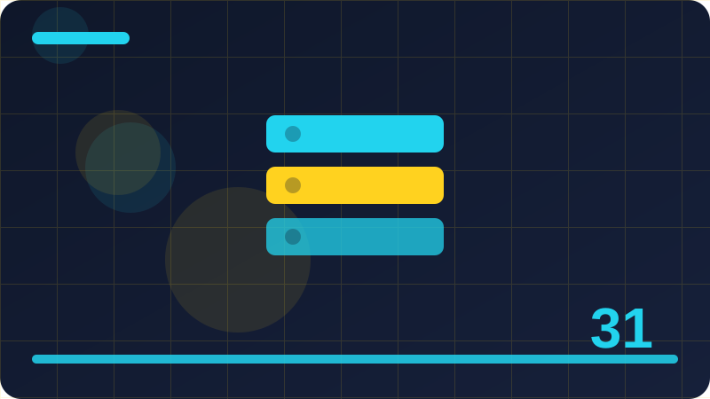

Chapter 31: Maps, Sets and Modern Collections

Section 1: What a Map Is and Why It Beats a Plain Object
Beginners often rush past what a map is and why it beats a plain object, but taking a few minutes to understand it properly will save you hours of confusion later in real projects. In everyday JavaScript work, what a map is and why it beats a plain object shows up in places you might not expect, especially when code grows beyond a single short script. A good way to think about what a map is and why it beats a plain object is to ask what problem it solves, what it replaces, and what would go wrong without it.
When you first meet what a map is and why it beats a plain object, try a tiny example in your head or in a console before you try to use it inside a larger program. The chapter theme of maps, sets and modern collections is easier to grasp when every new idea is connected to something you already know how to do. With what a map is and why it beats a plain object, the details matter less at first than the overall shape: what goes in, what comes out, and when the result changes.
Many learners understand what a map is and why it beats a plain object in isolation but struggle to recognise it later, so practice spotting it in code you read, not only code you write. A helpful habit is to name the parts of what a map is and why it beats a plain object out loud as you work, because clear names make hidden mistakes much easier to notice. If what a map is and why it beats a plain object feels confusing, slow down and change one small thing at a time, then observe what changes before you change anything else.
Real programs use what a map is and why it beats a plain object to keep code shorter, clearer and easier to change, which is why it is worth learning even when a longer approach also works. You do not need to master every edge case of what a map is and why it beats a plain object today; you need a reliable mental model you can return to and refine over time. Think of what a map is and why it beats a plain object as a pattern you will reuse: once you recognise the pattern, new examples will feel familiar even when the details differ.
One common misunderstanding about what a map is and why it beats a plain object is that it only matters in advanced code, when in fact it quietly shapes many ordinary tasks. When you read documentation about what a map is and why it beats a plain object, look for a simple example first and ignore advanced options until the basic behaviour feels solid. Practising what a map is and why it beats a plain object with your own examples, using data you care about, makes the idea stick far better than copying an example you do not understand.
const whatAMap = new Set([1, 2, 2, 3]);
whatAMap.add(4);
console.log(whatAMap.has(2));
console.log([...whatAMap]);Check: In your own words, how would you explain what a map is and why it beats a plain object and give one small example of using it?
Section 2: Creating a Map and Adding Entries
In everyday JavaScript work, creating a map and adding entries shows up in places you might not expect, especially when code grows beyond a single short script. A good way to think about creating a map and adding entries is to ask what problem it solves, what it replaces, and what would go wrong without it. When you first meet creating a map and adding entries, try a tiny example in your head or in a console before you try to use it inside a larger program. The chapter theme of maps, sets and modern collections is easier to grasp when every new idea is connected to something you already know how to do.
With creating a map and adding entries, the details matter less at first than the overall shape: what goes in, what comes out, and when the result changes. Many learners understand creating a map and adding entries in isolation but struggle to recognise it later, so practice spotting it in code you read, not only code you write. A helpful habit is to name the parts of creating a map and adding entries out loud as you work, because clear names make hidden mistakes much easier to notice. If creating a map and adding entries feels confusing, slow down and change one small thing at a time, then observe what changes before you change anything else.
Real programs use creating a map and adding entries to keep code shorter, clearer and easier to change, which is why it is worth learning even when a longer approach also works. You do not need to master every edge case of creating a map and adding entries today; you need a reliable mental model you can return to and refine over time. Think of creating a map and adding entries as a pattern you will reuse: once you recognise the pattern, new examples will feel familiar even when the details differ.
One common misunderstanding about creating a map and adding entries is that it only matters in advanced code, when in fact it quietly shapes many ordinary tasks. When you read documentation about creating a map and adding entries, look for a simple example first and ignore advanced options until the basic behaviour feels solid. Practising creating a map and adding entries with your own examples, using data you care about, makes the idea stick far better than copying an example you do not understand.
A useful test of understanding is whether you can explain creating a map and adding entries to a friend in two or three plain sentences without looking at your notes. In maps, sets and modern collections, small ideas combine into larger ones, and creating a map and adding entries is one of those building blocks that keeps appearing in later chapters. Errors involving creating a map and adding entries usually point to a mismatch between what you expected and what the code actually did, so check your assumptions first.
const creatingAMap = new Map([['a', 10], ['b', 20]]);
for (const [key, value] of creatingAMap) {
console.log(key, value);
}Check: In your own words, how would you explain creating a map and adding entries and give one small example of using it?
Section 3: Reading Values with get and has
A good way to think about reading values with get and has is to ask what problem it solves, what it replaces, and what would go wrong without it. When you first meet reading values with get and has, try a tiny example in your head or in a console before you try to use it inside a larger program. The chapter theme of maps, sets and modern collections is easier to grasp when every new idea is connected to something you already know how to do. With reading values with get and has, the details matter less at first than the overall shape: what goes in, what comes out, and when the result changes.
Many learners understand reading values with get and has in isolation but struggle to recognise it later, so practice spotting it in code you read, not only code you write. A helpful habit is to name the parts of reading values with get and has out loud as you work, because clear names make hidden mistakes much easier to notice. If reading values with get and has feels confusing, slow down and change one small thing at a time, then observe what changes before you change anything else. Real programs use reading values with get and has to keep code shorter, clearer and easier to change, which is why it is worth learning even when a longer approach also works.
You do not need to master every edge case of reading values with get and has today; you need a reliable mental model you can return to and refine over time. Think of reading values with get and has as a pattern you will reuse: once you recognise the pattern, new examples will feel familiar even when the details differ. One common misunderstanding about reading values with get and has is that it only matters in advanced code, when in fact it quietly shapes many ordinary tasks.
When you read documentation about reading values with get and has, look for a simple example first and ignore advanced options until the basic behaviour feels solid. Practising reading values with get and has with your own examples, using data you care about, makes the idea stick far better than copying an example you do not understand. A useful test of understanding is whether you can explain reading values with get and has to a friend in two or three plain sentences without looking at your notes.
In maps, sets and modern collections, small ideas combine into larger ones, and reading values with get and has is one of those building blocks that keeps appearing in later chapters. Errors involving reading values with get and has usually point to a mismatch between what you expected and what the code actually did, so check your assumptions first. Before you add complexity around reading values with get and has, make sure the simplest version works, because a simple working version is easier to debug than a clever broken one.
const readingValuesWith = new Map();
readingValuesWith.set('first', 1);
readingValuesWith.set('second', 2);
console.log(readingValuesWith.get('first'));
console.log(readingValuesWith.size);Check: In your own words, how would you explain reading values with get and has and give one small example of using it?
Section 4: Map Keys Can Be Anything
When you first meet map keys can be anything, try a tiny example in your head or in a console before you try to use it inside a larger program. The chapter theme of maps, sets and modern collections is easier to grasp when every new idea is connected to something you already know how to do. With map keys can be anything, the details matter less at first than the overall shape: what goes in, what comes out, and when the result changes. Many learners understand map keys can be anything in isolation but struggle to recognise it later, so practice spotting it in code you read, not only code you write.
A helpful habit is to name the parts of map keys can be anything out loud as you work, because clear names make hidden mistakes much easier to notice. If map keys can be anything feels confusing, slow down and change one small thing at a time, then observe what changes before you change anything else. Real programs use map keys can be anything to keep code shorter, clearer and easier to change, which is why it is worth learning even when a longer approach also works. You do not need to master every edge case of map keys can be anything today; you need a reliable mental model you can return to and refine over time.
Think of map keys can be anything as a pattern you will reuse: once you recognise the pattern, new examples will feel familiar even when the details differ. One common misunderstanding about map keys can be anything is that it only matters in advanced code, when in fact it quietly shapes many ordinary tasks. When you read documentation about map keys can be anything, look for a simple example first and ignore advanced options until the basic behaviour feels solid. Practising map keys can be anything with your own examples, using data you care about, makes the idea stick far better than copying an example you do not understand.
A useful test of understanding is whether you can explain map keys can be anything to a friend in two or three plain sentences without looking at your notes. In maps, sets and modern collections, small ideas combine into larger ones, and map keys can be anything is one of those building blocks that keeps appearing in later chapters. Errors involving map keys can be anything usually point to a mismatch between what you expected and what the code actually did, so check your assumptions first.
Before you add complexity around map keys can be anything, make sure the simplest version works, because a simple working version is easier to debug than a clever broken one. The examples for map keys can be anything in this section are deliberately small, so you can focus on the idea itself instead of getting lost in unrelated code. As you work through map keys can be anything, keep asking yourself what the code would do with empty input, with one item, and with many items.
const mapKeysCan = new Set([1, 2, 2, 3]);
mapKeysCan.add(4);
console.log(mapKeysCan.has(2));
console.log([...mapKeysCan]);Check: In your own words, how would you explain map keys can be anything and give one small example of using it?
Section 5: Map Size, Iteration Order and Predictability
The chapter theme of maps, sets and modern collections is easier to grasp when every new idea is connected to something you already know how to do. With map size, iteration order and predictability, the details matter less at first than the overall shape: what goes in, what comes out, and when the result changes. Many learners understand map size, iteration order and predictability in isolation but struggle to recognise it later, so practice spotting it in code you read, not only code you write. A helpful habit is to name the parts of map size, iteration order and predictability out loud as you work, because clear names make hidden mistakes much easier to notice.
If map size, iteration order and predictability feels confusing, slow down and change one small thing at a time, then observe what changes before you change anything else. Real programs use map size, iteration order and predictability to keep code shorter, clearer and easier to change, which is why it is worth learning even when a longer approach also works. You do not need to master every edge case of map size, iteration order and predictability today; you need a reliable mental model you can return to and refine over time. Think of map size, iteration order and predictability as a pattern you will reuse: once you recognise the pattern, new examples will feel familiar even when the details differ.
One common misunderstanding about map size, iteration order and predictability is that it only matters in advanced code, when in fact it quietly shapes many ordinary tasks. When you read documentation about map size, iteration order and predictability, look for a simple example first and ignore advanced options until the basic behaviour feels solid. Practising map size, iteration order and predictability with your own examples, using data you care about, makes the idea stick far better than copying an example you do not understand. A useful test of understanding is whether you can explain map size, iteration order and predictability to a friend in two or three plain sentences without looking at your notes.
In maps, sets and modern collections, small ideas combine into larger ones, and map size, iteration order and predictability is one of those building blocks that keeps appearing in later chapters. Errors involving map size, iteration order and predictability usually point to a mismatch between what you expected and what the code actually did, so check your assumptions first. Before you add complexity around map size, iteration order and predictability, make sure the simplest version works, because a simple working version is easier to debug than a clever broken one.
The examples for map size, iteration order and predictability in this section are deliberately small, so you can focus on the idea itself instead of getting lost in unrelated code. As you work through map size, iteration order and predictability, keep asking yourself what the code would do with empty input, with one item, and with many items. A beginner-friendly approach to map size, iteration order and predictability is to write the code, run it, read the output carefully, and only then try to improve it.
const mapSizeIteration = new Map([['a', 10], ['b', 20]]);
for (const [key, value] of mapSizeIteration) {
console.log(key, value);
}Check: In your own words, how would you explain map size, iteration order and predictability and give one small example of using it?
Section 6: Deleting and Clearing Map Entries
With deleting and clearing map entries, the details matter less at first than the overall shape: what goes in, what comes out, and when the result changes. Many learners understand deleting and clearing map entries in isolation but struggle to recognise it later, so practice spotting it in code you read, not only code you write. A helpful habit is to name the parts of deleting and clearing map entries out loud as you work, because clear names make hidden mistakes much easier to notice. If deleting and clearing map entries feels confusing, slow down and change one small thing at a time, then observe what changes before you change anything else.
Real programs use deleting and clearing map entries to keep code shorter, clearer and easier to change, which is why it is worth learning even when a longer approach also works. You do not need to master every edge case of deleting and clearing map entries today; you need a reliable mental model you can return to and refine over time. Think of deleting and clearing map entries as a pattern you will reuse: once you recognise the pattern, new examples will feel familiar even when the details differ. One common misunderstanding about deleting and clearing map entries is that it only matters in advanced code, when in fact it quietly shapes many ordinary tasks.
When you read documentation about deleting and clearing map entries, look for a simple example first and ignore advanced options until the basic behaviour feels solid. Practising deleting and clearing map entries with your own examples, using data you care about, makes the idea stick far better than copying an example you do not understand. A useful test of understanding is whether you can explain deleting and clearing map entries to a friend in two or three plain sentences without looking at your notes. In maps, sets and modern collections, small ideas combine into larger ones, and deleting and clearing map entries is one of those building blocks that keeps appearing in later chapters.
Errors involving deleting and clearing map entries usually point to a mismatch between what you expected and what the code actually did, so check your assumptions first. Before you add complexity around deleting and clearing map entries, make sure the simplest version works, because a simple working version is easier to debug than a clever broken one. The examples for deleting and clearing map entries in this section are deliberately small, so you can focus on the idea itself instead of getting lost in unrelated code.
As you work through deleting and clearing map entries, keep asking yourself what the code would do with empty input, with one item, and with many items. A beginner-friendly approach to deleting and clearing map entries is to write the code, run it, read the output carefully, and only then try to improve it. When deleting and clearing map entries behaves unexpectedly, print or inspect the intermediate values, because the surprise is usually one step earlier than you first think.
const deletingAndClearing = new Map();
deletingAndClearing.set('first', 1);
deletingAndClearing.set('second', 2);
console.log(deletingAndClearing.get('first'));
console.log(deletingAndClearing.size);Check: In your own words, how would you explain deleting and clearing map entries and give one small example of using it?
Section 7: Looping a Map with for of and forEach
Many learners understand looping a map with for of and foreach in isolation but struggle to recognise it later, so practice spotting it in code you read, not only code you write. A helpful habit is to name the parts of looping a map with for of and foreach out loud as you work, because clear names make hidden mistakes much easier to notice. If looping a map with for of and foreach feels confusing, slow down and change one small thing at a time, then observe what changes before you change anything else. Real programs use looping a map with for of and foreach to keep code shorter, clearer and easier to change, which is why it is worth learning even when a longer approach also works.
You do not need to master every edge case of looping a map with for of and foreach today; you need a reliable mental model you can return to and refine over time. Think of looping a map with for of and foreach as a pattern you will reuse: once you recognise the pattern, new examples will feel familiar even when the details differ. One common misunderstanding about looping a map with for of and foreach is that it only matters in advanced code, when in fact it quietly shapes many ordinary tasks.
When you read documentation about looping a map with for of and foreach, look for a simple example first and ignore advanced options until the basic behaviour feels solid. Practising looping a map with for of and foreach with your own examples, using data you care about, makes the idea stick far better than copying an example you do not understand. A useful test of understanding is whether you can explain looping a map with for of and foreach to a friend in two or three plain sentences without looking at your notes.
In maps, sets and modern collections, small ideas combine into larger ones, and looping a map with for of and foreach is one of those building blocks that keeps appearing in later chapters. Errors involving looping a map with for of and foreach usually point to a mismatch between what you expected and what the code actually did, so check your assumptions first. Before you add complexity around looping a map with for of and foreach, make sure the simplest version works, because a simple working version is easier to debug than a clever broken one.
The examples for looping a map with for of and foreach in this section are deliberately small, so you can focus on the idea itself instead of getting lost in unrelated code. As you work through looping a map with for of and foreach, keep asking yourself what the code would do with empty input, with one item, and with many items. A beginner-friendly approach to looping a map with for of and foreach is to write the code, run it, read the output carefully, and only then try to improve it.
const loopingAMap = new Set([1, 2, 2, 3]);
loopingAMap.add(4);
console.log(loopingAMap.has(2));
console.log([...loopingAMap]);Check: In your own words, how would you explain looping a map with for of and foreach and give one small example of using it?
Section 8: Map Keys, Values and Entries
A helpful habit is to name the parts of map keys, values and entries out loud as you work, because clear names make hidden mistakes much easier to notice. If map keys, values and entries feels confusing, slow down and change one small thing at a time, then observe what changes before you change anything else. Real programs use map keys, values and entries to keep code shorter, clearer and easier to change, which is why it is worth learning even when a longer approach also works. You do not need to master every edge case of map keys, values and entries today; you need a reliable mental model you can return to and refine over time.
Think of map keys, values and entries as a pattern you will reuse: once you recognise the pattern, new examples will feel familiar even when the details differ. One common misunderstanding about map keys, values and entries is that it only matters in advanced code, when in fact it quietly shapes many ordinary tasks. When you read documentation about map keys, values and entries, look for a simple example first and ignore advanced options until the basic behaviour feels solid. Practising map keys, values and entries with your own examples, using data you care about, makes the idea stick far better than copying an example you do not understand.
A useful test of understanding is whether you can explain map keys, values and entries to a friend in two or three plain sentences without looking at your notes. In maps, sets and modern collections, small ideas combine into larger ones, and map keys, values and entries is one of those building blocks that keeps appearing in later chapters. Errors involving map keys, values and entries usually point to a mismatch between what you expected and what the code actually did, so check your assumptions first. Before you add complexity around map keys, values and entries, make sure the simplest version works, because a simple working version is easier to debug than a clever broken one.
The examples for map keys, values and entries in this section are deliberately small, so you can focus on the idea itself instead of getting lost in unrelated code. As you work through map keys, values and entries, keep asking yourself what the code would do with empty input, with one item, and with many items. A beginner-friendly approach to map keys, values and entries is to write the code, run it, read the output carefully, and only then try to improve it.
When map keys, values and entries behaves unexpectedly, print or inspect the intermediate values, because the surprise is usually one step earlier than you first think. Learning map keys, values and entries well means learning both how to use it and when not to use it, since the wrong tool can make simple code harder to read. Try to connect map keys, values and entries to a project you already have, even a tiny one, because an idea tied to real work is much harder to forget.
const mapKeysValues = new Map([['a', 10], ['b', 20]]);
for (const [key, value] of mapKeysValues) {
console.log(key, value);
}Check: In your own words, how would you explain map keys, values and entries and give one small example of using it?
Section 9: Turning a Map into an Array and Back
If turning a map into an array and back feels confusing, slow down and change one small thing at a time, then observe what changes before you change anything else. Real programs use turning a map into an array and back to keep code shorter, clearer and easier to change, which is why it is worth learning even when a longer approach also works. You do not need to master every edge case of turning a map into an array and back today; you need a reliable mental model you can return to and refine over time. Think of turning a map into an array and back as a pattern you will reuse: once you recognise the pattern, new examples will feel familiar even when the details differ.
One common misunderstanding about turning a map into an array and back is that it only matters in advanced code, when in fact it quietly shapes many ordinary tasks. When you read documentation about turning a map into an array and back, look for a simple example first and ignore advanced options until the basic behaviour feels solid. Practising turning a map into an array and back with your own examples, using data you care about, makes the idea stick far better than copying an example you do not understand.
A useful test of understanding is whether you can explain turning a map into an array and back to a friend in two or three plain sentences without looking at your notes. In maps, sets and modern collections, small ideas combine into larger ones, and turning a map into an array and back is one of those building blocks that keeps appearing in later chapters. Errors involving turning a map into an array and back usually point to a mismatch between what you expected and what the code actually did, so check your assumptions first.
Before you add complexity around turning a map into an array and back, make sure the simplest version works, because a simple working version is easier to debug than a clever broken one. The examples for turning a map into an array and back in this section are deliberately small, so you can focus on the idea itself instead of getting lost in unrelated code. As you work through turning a map into an array and back, keep asking yourself what the code would do with empty input, with one item, and with many items.
A beginner-friendly approach to turning a map into an array and back is to write the code, run it, read the output carefully, and only then try to improve it. When turning a map into an array and back behaves unexpectedly, print or inspect the intermediate values, because the surprise is usually one step earlier than you first think. Learning turning a map into an array and back well means learning both how to use it and when not to use it, since the wrong tool can make simple code harder to read.
const turningAMap = new Map();
turningAMap.set('first', 1);
turningAMap.set('second', 2);
console.log(turningAMap.get('first'));
console.log(turningAMap.size);Check: In your own words, how would you explain turning a map into an array and back and give one small example of using it?
Section 10: Maps Versus Objects for Lookup Tables
Real programs use maps versus objects for lookup tables to keep code shorter, clearer and easier to change, which is why it is worth learning even when a longer approach also works. You do not need to master every edge case of maps versus objects for lookup tables today; you need a reliable mental model you can return to and refine over time. Think of maps versus objects for lookup tables as a pattern you will reuse: once you recognise the pattern, new examples will feel familiar even when the details differ. One common misunderstanding about maps versus objects for lookup tables is that it only matters in advanced code, when in fact it quietly shapes many ordinary tasks.
When you read documentation about maps versus objects for lookup tables, look for a simple example first and ignore advanced options until the basic behaviour feels solid. Practising maps versus objects for lookup tables with your own examples, using data you care about, makes the idea stick far better than copying an example you do not understand. A useful test of understanding is whether you can explain maps versus objects for lookup tables to a friend in two or three plain sentences without looking at your notes. In maps, sets and modern collections, small ideas combine into larger ones, and maps versus objects for lookup tables is one of those building blocks that keeps appearing in later chapters.
Errors involving maps versus objects for lookup tables usually point to a mismatch between what you expected and what the code actually did, so check your assumptions first. Before you add complexity around maps versus objects for lookup tables, make sure the simplest version works, because a simple working version is easier to debug than a clever broken one. The examples for maps versus objects for lookup tables in this section are deliberately small, so you can focus on the idea itself instead of getting lost in unrelated code.
As you work through maps versus objects for lookup tables, keep asking yourself what the code would do with empty input, with one item, and with many items. A beginner-friendly approach to maps versus objects for lookup tables is to write the code, run it, read the output carefully, and only then try to improve it. When maps versus objects for lookup tables behaves unexpectedly, print or inspect the intermediate values, because the surprise is usually one step earlier than you first think.
Learning maps versus objects for lookup tables well means learning both how to use it and when not to use it, since the wrong tool can make simple code harder to read. Try to connect maps versus objects for lookup tables to a project you already have, even a tiny one, because an idea tied to real work is much harder to forget. The most important skill around maps versus objects for lookup tables is not memorising syntax, but recognising the situation where this idea is the right answer.
const mapsVersusObjects = new Set([1, 2, 2, 3]);
mapsVersusObjects.add(4);
console.log(mapsVersusObjects.has(2));
console.log([...mapsVersusObjects]);Check: In your own words, how would you explain maps versus objects for lookup tables and give one small example of using it?
Section 11: Counting Things with a Map
You do not need to master every edge case of counting things with a map today; you need a reliable mental model you can return to and refine over time. Think of counting things with a map as a pattern you will reuse: once you recognise the pattern, new examples will feel familiar even when the details differ. One common misunderstanding about counting things with a map is that it only matters in advanced code, when in fact it quietly shapes many ordinary tasks. When you read documentation about counting things with a map, look for a simple example first and ignore advanced options until the basic behaviour feels solid.
Practising counting things with a map with your own examples, using data you care about, makes the idea stick far better than copying an example you do not understand. A useful test of understanding is whether you can explain counting things with a map to a friend in two or three plain sentences without looking at your notes. In maps, sets and modern collections, small ideas combine into larger ones, and counting things with a map is one of those building blocks that keeps appearing in later chapters. Errors involving counting things with a map usually point to a mismatch between what you expected and what the code actually did, so check your assumptions first.
Before you add complexity around counting things with a map, make sure the simplest version works, because a simple working version is easier to debug than a clever broken one. The examples for counting things with a map in this section are deliberately small, so you can focus on the idea itself instead of getting lost in unrelated code. As you work through counting things with a map, keep asking yourself what the code would do with empty input, with one item, and with many items. A beginner-friendly approach to counting things with a map is to write the code, run it, read the output carefully, and only then try to improve it.
When counting things with a map behaves unexpectedly, print or inspect the intermediate values, because the surprise is usually one step earlier than you first think. Learning counting things with a map well means learning both how to use it and when not to use it, since the wrong tool can make simple code harder to read. Try to connect counting things with a map to a project you already have, even a tiny one, because an idea tied to real work is much harder to forget.
The most important skill around counting things with a map is not memorising syntax, but recognising the situation where this idea is the right answer. If you feel stuck on counting things with a map, return to the smallest possible example and rebuild your understanding from there, one step at a time. Good JavaScript developers treat counting things with a map as part of their everyday vocabulary, using it calmly and deliberately rather than reaching for it everywhere.
const countingThingsWith = new Map([['a', 10], ['b', 20]]);
for (const [key, value] of countingThingsWith) {
console.log(key, value);
}Check: In your own words, how would you explain counting things with a map and give one small example of using it?
Section 12: Using a Map as a Cache
Think of using a map as a cache as a pattern you will reuse: once you recognise the pattern, new examples will feel familiar even when the details differ. One common misunderstanding about using a map as a cache is that it only matters in advanced code, when in fact it quietly shapes many ordinary tasks. When you read documentation about using a map as a cache, look for a simple example first and ignore advanced options until the basic behaviour feels solid. Practising using a map as a cache with your own examples, using data you care about, makes the idea stick far better than copying an example you do not understand.
A useful test of understanding is whether you can explain using a map as a cache to a friend in two or three plain sentences without looking at your notes. In maps, sets and modern collections, small ideas combine into larger ones, and using a map as a cache is one of those building blocks that keeps appearing in later chapters. Errors involving using a map as a cache usually point to a mismatch between what you expected and what the code actually did, so check your assumptions first. Before you add complexity around using a map as a cache, make sure the simplest version works, because a simple working version is easier to debug than a clever broken one.
The examples for using a map as a cache in this section are deliberately small, so you can focus on the idea itself instead of getting lost in unrelated code. As you work through using a map as a cache, keep asking yourself what the code would do with empty input, with one item, and with many items. A beginner-friendly approach to using a map as a cache is to write the code, run it, read the output carefully, and only then try to improve it. When using a map as a cache behaves unexpectedly, print or inspect the intermediate values, because the surprise is usually one step earlier than you first think.
Learning using a map as a cache well means learning both how to use it and when not to use it, since the wrong tool can make simple code harder to read. Try to connect using a map as a cache to a project you already have, even a tiny one, because an idea tied to real work is much harder to forget. The most important skill around using a map as a cache is not memorising syntax, but recognising the situation where this idea is the right answer.
If you feel stuck on using a map as a cache, return to the smallest possible example and rebuild your understanding from there, one step at a time. Good JavaScript developers treat using a map as a cache as part of their everyday vocabulary, using it calmly and deliberately rather than reaching for it everywhere. Notice how using a map as a cache interacts with other ideas in this chapter, because real code rarely uses one idea entirely on its own.
const usingAMap = new Map();
usingAMap.set('first', 1);
usingAMap.set('second', 2);
console.log(usingAMap.get('first'));
console.log(usingAMap.size);Check: In your own words, how would you explain using a map as a cache and give one small example of using it?
Section 13: Grouping Data with a Map
One common misunderstanding about grouping data with a map is that it only matters in advanced code, when in fact it quietly shapes many ordinary tasks. When you read documentation about grouping data with a map, look for a simple example first and ignore advanced options until the basic behaviour feels solid. Practising grouping data with a map with your own examples, using data you care about, makes the idea stick far better than copying an example you do not understand. A useful test of understanding is whether you can explain grouping data with a map to a friend in two or three plain sentences without looking at your notes.
In maps, sets and modern collections, small ideas combine into larger ones, and grouping data with a map is one of those building blocks that keeps appearing in later chapters. Errors involving grouping data with a map usually point to a mismatch between what you expected and what the code actually did, so check your assumptions first. Before you add complexity around grouping data with a map, make sure the simplest version works, because a simple working version is easier to debug than a clever broken one. The examples for grouping data with a map in this section are deliberately small, so you can focus on the idea itself instead of getting lost in unrelated code.
As you work through grouping data with a map, keep asking yourself what the code would do with empty input, with one item, and with many items. A beginner-friendly approach to grouping data with a map is to write the code, run it, read the output carefully, and only then try to improve it. When grouping data with a map behaves unexpectedly, print or inspect the intermediate values, because the surprise is usually one step earlier than you first think. Learning grouping data with a map well means learning both how to use it and when not to use it, since the wrong tool can make simple code harder to read.
Try to connect grouping data with a map to a project you already have, even a tiny one, because an idea tied to real work is much harder to forget. The most important skill around grouping data with a map is not memorising syntax, but recognising the situation where this idea is the right answer. If you feel stuck on grouping data with a map, return to the smallest possible example and rebuild your understanding from there, one step at a time. Good JavaScript developers treat grouping data with a map as part of their everyday vocabulary, using it calmly and deliberately rather than reaching for it everywhere.
Notice how grouping data with a map interacts with other ideas in this chapter, because real code rarely uses one idea entirely on its own. A short experiment with grouping data with a map today will teach you more than rereading this section three times without touching the keyboard. When you review your own code for grouping data with a map, ask whether another developer could follow it without a long explanation, and simplify if the answer is no.
const groupingDataWith = new Set([1, 2, 2, 3]);
groupingDataWith.add(4);
console.log(groupingDataWith.has(2));
console.log([...groupingDataWith]);Check: In your own words, how would you explain grouping data with a map and give one small example of using it?
Section 14: What a Set Is and Why Duplicates Disappear
When you read documentation about what a set is and why duplicates disappear, look for a simple example first and ignore advanced options until the basic behaviour feels solid. Practising what a set is and why duplicates disappear with your own examples, using data you care about, makes the idea stick far better than copying an example you do not understand. A useful test of understanding is whether you can explain what a set is and why duplicates disappear to a friend in two or three plain sentences without looking at your notes. In maps, sets and modern collections, small ideas combine into larger ones, and what a set is and why duplicates disappear is one of those building blocks that keeps appearing in later chapters.
Errors involving what a set is and why duplicates disappear usually point to a mismatch between what you expected and what the code actually did, so check your assumptions first. Before you add complexity around what a set is and why duplicates disappear, make sure the simplest version works, because a simple working version is easier to debug than a clever broken one. The examples for what a set is and why duplicates disappear in this section are deliberately small, so you can focus on the idea itself instead of getting lost in unrelated code. As you work through what a set is and why duplicates disappear, keep asking yourself what the code would do with empty input, with one item, and with many items.
A beginner-friendly approach to what a set is and why duplicates disappear is to write the code, run it, read the output carefully, and only then try to improve it. When what a set is and why duplicates disappear behaves unexpectedly, print or inspect the intermediate values, because the surprise is usually one step earlier than you first think. Learning what a set is and why duplicates disappear well means learning both how to use it and when not to use it, since the wrong tool can make simple code harder to read.
Try to connect what a set is and why duplicates disappear to a project you already have, even a tiny one, because an idea tied to real work is much harder to forget. The most important skill around what a set is and why duplicates disappear is not memorising syntax, but recognising the situation where this idea is the right answer. If you feel stuck on what a set is and why duplicates disappear, return to the smallest possible example and rebuild your understanding from there, one step at a time.
Good JavaScript developers treat what a set is and why duplicates disappear as part of their everyday vocabulary, using it calmly and deliberately rather than reaching for it everywhere. Notice how what a set is and why duplicates disappear interacts with other ideas in this chapter, because real code rarely uses one idea entirely on its own. A short experiment with what a set is and why duplicates disappear today will teach you more than rereading this section three times without touching the keyboard.
const whatASet = new Map([['a', 10], ['b', 20]]);
for (const [key, value] of whatASet) {
console.log(key, value);
}Check: In your own words, how would you explain what a set is and why duplicates disappear and give one small example of using it?
Section 15: Creating a Set and Adding Values
Practising creating a set and adding values with your own examples, using data you care about, makes the idea stick far better than copying an example you do not understand. A useful test of understanding is whether you can explain creating a set and adding values to a friend in two or three plain sentences without looking at your notes. In maps, sets and modern collections, small ideas combine into larger ones, and creating a set and adding values is one of those building blocks that keeps appearing in later chapters. Errors involving creating a set and adding values usually point to a mismatch between what you expected and what the code actually did, so check your assumptions first.
Before you add complexity around creating a set and adding values, make sure the simplest version works, because a simple working version is easier to debug than a clever broken one. The examples for creating a set and adding values in this section are deliberately small, so you can focus on the idea itself instead of getting lost in unrelated code. As you work through creating a set and adding values, keep asking yourself what the code would do with empty input, with one item, and with many items. A beginner-friendly approach to creating a set and adding values is to write the code, run it, read the output carefully, and only then try to improve it.
When creating a set and adding values behaves unexpectedly, print or inspect the intermediate values, because the surprise is usually one step earlier than you first think. Learning creating a set and adding values well means learning both how to use it and when not to use it, since the wrong tool can make simple code harder to read. Try to connect creating a set and adding values to a project you already have, even a tiny one, because an idea tied to real work is much harder to forget. The most important skill around creating a set and adding values is not memorising syntax, but recognising the situation where this idea is the right answer.
If you feel stuck on creating a set and adding values, return to the smallest possible example and rebuild your understanding from there, one step at a time. Good JavaScript developers treat creating a set and adding values as part of their everyday vocabulary, using it calmly and deliberately rather than reaching for it everywhere. Notice how creating a set and adding values interacts with other ideas in this chapter, because real code rarely uses one idea entirely on its own.
A short experiment with creating a set and adding values today will teach you more than rereading this section three times without touching the keyboard. When you review your own code for creating a set and adding values, ask whether another developer could follow it without a long explanation, and simplify if the answer is no. The confidence to use creating a set and adding values comes from small successes, so celebrate a tiny working example before you attempt a larger, more ambitious one.
const creatingASet = new Map();
creatingASet.set('first', 1);
creatingASet.set('second', 2);
console.log(creatingASet.get('first'));
console.log(creatingASet.size);Check: In your own words, how would you explain creating a set and adding values and give one small example of using it?
Section 16: Checking, Deleting and Clearing a Set
A useful test of understanding is whether you can explain checking, deleting and clearing a set to a friend in two or three plain sentences without looking at your notes. In maps, sets and modern collections, small ideas combine into larger ones, and checking, deleting and clearing a set is one of those building blocks that keeps appearing in later chapters. Errors involving checking, deleting and clearing a set usually point to a mismatch between what you expected and what the code actually did, so check your assumptions first. Before you add complexity around checking, deleting and clearing a set, make sure the simplest version works, because a simple working version is easier to debug than a clever broken one.
The examples for checking, deleting and clearing a set in this section are deliberately small, so you can focus on the idea itself instead of getting lost in unrelated code. As you work through checking, deleting and clearing a set, keep asking yourself what the code would do with empty input, with one item, and with many items. A beginner-friendly approach to checking, deleting and clearing a set is to write the code, run it, read the output carefully, and only then try to improve it. When checking, deleting and clearing a set behaves unexpectedly, print or inspect the intermediate values, because the surprise is usually one step earlier than you first think.
Learning checking, deleting and clearing a set well means learning both how to use it and when not to use it, since the wrong tool can make simple code harder to read. Try to connect checking, deleting and clearing a set to a project you already have, even a tiny one, because an idea tied to real work is much harder to forget. The most important skill around checking, deleting and clearing a set is not memorising syntax, but recognising the situation where this idea is the right answer. If you feel stuck on checking, deleting and clearing a set, return to the smallest possible example and rebuild your understanding from there, one step at a time.
Good JavaScript developers treat checking, deleting and clearing a set as part of their everyday vocabulary, using it calmly and deliberately rather than reaching for it everywhere. Notice how checking, deleting and clearing a set interacts with other ideas in this chapter, because real code rarely uses one idea entirely on its own. A short experiment with checking, deleting and clearing a set today will teach you more than rereading this section three times without touching the keyboard.
When you review your own code for checking, deleting and clearing a set, ask whether another developer could follow it without a long explanation, and simplify if the answer is no. The confidence to use checking, deleting and clearing a set comes from small successes, so celebrate a tiny working example before you attempt a larger, more ambitious one. Remember that checking, deleting and clearing a set is a tool for people, not only for computers, so clarity for the reader matters just as much as correctness for the machine.
const checkingDeletingAnd = new Set([1, 2, 2, 3]);
checkingDeletingAnd.add(4);
console.log(checkingDeletingAnd.has(2));
console.log([...checkingDeletingAnd]);Check: In your own words, how would you explain checking, deleting and clearing a set and give one small example of using it?
Section 17: Looping a Set in Insertion Order
In maps, sets and modern collections, small ideas combine into larger ones, and looping a set in insertion order is one of those building blocks that keeps appearing in later chapters. Errors involving looping a set in insertion order usually point to a mismatch between what you expected and what the code actually did, so check your assumptions first. Before you add complexity around looping a set in insertion order, make sure the simplest version works, because a simple working version is easier to debug than a clever broken one. The examples for looping a set in insertion order in this section are deliberately small, so you can focus on the idea itself instead of getting lost in unrelated code.
As you work through looping a set in insertion order, keep asking yourself what the code would do with empty input, with one item, and with many items. A beginner-friendly approach to looping a set in insertion order is to write the code, run it, read the output carefully, and only then try to improve it. When looping a set in insertion order behaves unexpectedly, print or inspect the intermediate values, because the surprise is usually one step earlier than you first think. Learning looping a set in insertion order well means learning both how to use it and when not to use it, since the wrong tool can make simple code harder to read.
Try to connect looping a set in insertion order to a project you already have, even a tiny one, because an idea tied to real work is much harder to forget. The most important skill around looping a set in insertion order is not memorising syntax, but recognising the situation where this idea is the right answer. If you feel stuck on looping a set in insertion order, return to the smallest possible example and rebuild your understanding from there, one step at a time. Good JavaScript developers treat looping a set in insertion order as part of their everyday vocabulary, using it calmly and deliberately rather than reaching for it everywhere.
Notice how looping a set in insertion order interacts with other ideas in this chapter, because real code rarely uses one idea entirely on its own. A short experiment with looping a set in insertion order today will teach you more than rereading this section three times without touching the keyboard. When you review your own code for looping a set in insertion order, ask whether another developer could follow it without a long explanation, and simplify if the answer is no.
The confidence to use looping a set in insertion order comes from small successes, so celebrate a tiny working example before you attempt a larger, more ambitious one. Remember that looping a set in insertion order is a tool for people, not only for computers, so clarity for the reader matters just as much as correctness for the machine. As your projects grow, looping a set in insertion order will help you avoid repeating yourself and keep related behaviour in one understandable place.
const loopingASet = new Map([['a', 10], ['b', 20]]);
for (const [key, value] of loopingASet) {
console.log(key, value);
}Check: In your own words, how would you explain looping a set in insertion order and give one small example of using it?
Section 18: Removing Duplicates from an Array with a Set
Errors involving removing duplicates from an array with a set usually point to a mismatch between what you expected and what the code actually did, so check your assumptions first. Before you add complexity around removing duplicates from an array with a set, make sure the simplest version works, because a simple working version is easier to debug than a clever broken one. The examples for removing duplicates from an array with a set in this section are deliberately small, so you can focus on the idea itself instead of getting lost in unrelated code. As you work through removing duplicates from an array with a set, keep asking yourself what the code would do with empty input, with one item, and with many items.
A beginner-friendly approach to removing duplicates from an array with a set is to write the code, run it, read the output carefully, and only then try to improve it. When removing duplicates from an array with a set behaves unexpectedly, print or inspect the intermediate values, because the surprise is usually one step earlier than you first think. Learning removing duplicates from an array with a set well means learning both how to use it and when not to use it, since the wrong tool can make simple code harder to read. Try to connect removing duplicates from an array with a set to a project you already have, even a tiny one, because an idea tied to real work is much harder to forget.
The most important skill around removing duplicates from an array with a set is not memorising syntax, but recognising the situation where this idea is the right answer. If you feel stuck on removing duplicates from an array with a set, return to the smallest possible example and rebuild your understanding from there, one step at a time. Good JavaScript developers treat removing duplicates from an array with a set as part of their everyday vocabulary, using it calmly and deliberately rather than reaching for it everywhere.
Notice how removing duplicates from an array with a set interacts with other ideas in this chapter, because real code rarely uses one idea entirely on its own. A short experiment with removing duplicates from an array with a set today will teach you more than rereading this section three times without touching the keyboard. When you review your own code for removing duplicates from an array with a set, ask whether another developer could follow it without a long explanation, and simplify if the answer is no.
The confidence to use removing duplicates from an array with a set comes from small successes, so celebrate a tiny working example before you attempt a larger, more ambitious one. Remember that removing duplicates from an array with a set is a tool for people, not only for computers, so clarity for the reader matters just as much as correctness for the machine. As your projects grow, removing duplicates from an array with a set will help you avoid repeating yourself and keep related behaviour in one understandable place.
const removingDuplicatesFrom = new Map();
removingDuplicatesFrom.set('first', 1);
removingDuplicatesFrom.set('second', 2);
console.log(removingDuplicatesFrom.get('first'));
console.log(removingDuplicatesFrom.size);Check: In your own words, how would you explain removing duplicates from an array with a set and give one small example of using it?
Section 19: Set Operations Done by Hand: Union
Before you add complexity around set operations done by hand: union, make sure the simplest version works, because a simple working version is easier to debug than a clever broken one. The examples for set operations done by hand: union in this section are deliberately small, so you can focus on the idea itself instead of getting lost in unrelated code. As you work through set operations done by hand: union, keep asking yourself what the code would do with empty input, with one item, and with many items. A beginner-friendly approach to set operations done by hand: union is to write the code, run it, read the output carefully, and only then try to improve it.
When set operations done by hand: union behaves unexpectedly, print or inspect the intermediate values, because the surprise is usually one step earlier than you first think. Learning set operations done by hand: union well means learning both how to use it and when not to use it, since the wrong tool can make simple code harder to read. Try to connect set operations done by hand: union to a project you already have, even a tiny one, because an idea tied to real work is much harder to forget. The most important skill around set operations done by hand: union is not memorising syntax, but recognising the situation where this idea is the right answer.
If you feel stuck on set operations done by hand: union, return to the smallest possible example and rebuild your understanding from there, one step at a time. Good JavaScript developers treat set operations done by hand: union as part of their everyday vocabulary, using it calmly and deliberately rather than reaching for it everywhere. Notice how set operations done by hand: union interacts with other ideas in this chapter, because real code rarely uses one idea entirely on its own. A short experiment with set operations done by hand: union today will teach you more than rereading this section three times without touching the keyboard.
When you review your own code for set operations done by hand: union, ask whether another developer could follow it without a long explanation, and simplify if the answer is no. The confidence to use set operations done by hand: union comes from small successes, so celebrate a tiny working example before you attempt a larger, more ambitious one. Remember that set operations done by hand: union is a tool for people, not only for computers, so clarity for the reader matters just as much as correctness for the machine.
As your projects grow, set operations done by hand: union will help you avoid repeating yourself and keep related behaviour in one understandable place. One way to deepen your grasp of set operations done by hand: union is to deliberately break a working example, observe the error, and then repair it yourself. Do not worry if set operations done by hand: union takes more than one reading to feel natural; most useful JavaScript ideas do, and that is completely normal.
const setOperationsDone = new Set([1, 2, 2, 3]);
setOperationsDone.add(4);
console.log(setOperationsDone.has(2));
console.log([...setOperationsDone]);Check: In your own words, how would you explain set operations done by hand: union and give one small example of using it?
Section 20: Set Operations Done by Hand: Intersection
The examples for set operations done by hand: intersection in this section are deliberately small, so you can focus on the idea itself instead of getting lost in unrelated code. As you work through set operations done by hand: intersection, keep asking yourself what the code would do with empty input, with one item, and with many items. A beginner-friendly approach to set operations done by hand: intersection is to write the code, run it, read the output carefully, and only then try to improve it. When set operations done by hand: intersection behaves unexpectedly, print or inspect the intermediate values, because the surprise is usually one step earlier than you first think.
Learning set operations done by hand: intersection well means learning both how to use it and when not to use it, since the wrong tool can make simple code harder to read. Try to connect set operations done by hand: intersection to a project you already have, even a tiny one, because an idea tied to real work is much harder to forget. The most important skill around set operations done by hand: intersection is not memorising syntax, but recognising the situation where this idea is the right answer. If you feel stuck on set operations done by hand: intersection, return to the smallest possible example and rebuild your understanding from there, one step at a time.
Good JavaScript developers treat set operations done by hand: intersection as part of their everyday vocabulary, using it calmly and deliberately rather than reaching for it everywhere. Notice how set operations done by hand: intersection interacts with other ideas in this chapter, because real code rarely uses one idea entirely on its own. A short experiment with set operations done by hand: intersection today will teach you more than rereading this section three times without touching the keyboard. When you review your own code for set operations done by hand: intersection, ask whether another developer could follow it without a long explanation, and simplify if the answer is no.
The confidence to use set operations done by hand: intersection comes from small successes, so celebrate a tiny working example before you attempt a larger, more ambitious one. Remember that set operations done by hand: intersection is a tool for people, not only for computers, so clarity for the reader matters just as much as correctness for the machine. As your projects grow, set operations done by hand: intersection will help you avoid repeating yourself and keep related behaviour in one understandable place.
One way to deepen your grasp of set operations done by hand: intersection is to deliberately break a working example, observe the error, and then repair it yourself. Do not worry if set operations done by hand: intersection takes more than one reading to feel natural; most useful JavaScript ideas do, and that is completely normal. In practice, set operations done by hand: intersection rewards careful naming, because a well-named variable or function tells the next reader exactly what is happening.
const setOperationsDone = new Map([['a', 10], ['b', 20]]);
for (const [key, value] of setOperationsDone) {
console.log(key, value);
}Check: In your own words, how would you explain set operations done by hand: intersection and give one small example of using it?
Section 21: Set Operations Done by Hand: Difference
As you work through set operations done by hand: difference, keep asking yourself what the code would do with empty input, with one item, and with many items. A beginner-friendly approach to set operations done by hand: difference is to write the code, run it, read the output carefully, and only then try to improve it. When set operations done by hand: difference behaves unexpectedly, print or inspect the intermediate values, because the surprise is usually one step earlier than you first think. Learning set operations done by hand: difference well means learning both how to use it and when not to use it, since the wrong tool can make simple code harder to read.
Try to connect set operations done by hand: difference to a project you already have, even a tiny one, because an idea tied to real work is much harder to forget. The most important skill around set operations done by hand: difference is not memorising syntax, but recognising the situation where this idea is the right answer. If you feel stuck on set operations done by hand: difference, return to the smallest possible example and rebuild your understanding from there, one step at a time. Good JavaScript developers treat set operations done by hand: difference as part of their everyday vocabulary, using it calmly and deliberately rather than reaching for it everywhere.
Notice how set operations done by hand: difference interacts with other ideas in this chapter, because real code rarely uses one idea entirely on its own. A short experiment with set operations done by hand: difference today will teach you more than rereading this section three times without touching the keyboard. When you review your own code for set operations done by hand: difference, ask whether another developer could follow it without a long explanation, and simplify if the answer is no. The confidence to use set operations done by hand: difference comes from small successes, so celebrate a tiny working example before you attempt a larger, more ambitious one.
Remember that set operations done by hand: difference is a tool for people, not only for computers, so clarity for the reader matters just as much as correctness for the machine. As your projects grow, set operations done by hand: difference will help you avoid repeating yourself and keep related behaviour in one understandable place. One way to deepen your grasp of set operations done by hand: difference is to deliberately break a working example, observe the error, and then repair it yourself.
Do not worry if set operations done by hand: difference takes more than one reading to feel natural; most useful JavaScript ideas do, and that is completely normal. In practice, set operations done by hand: difference rewards careful naming, because a well-named variable or function tells the next reader exactly what is happening. When you compare approaches to set operations done by hand: difference, judge them by readability and correctness first, and by cleverness or brevity only afterwards.
const setOperationsDone = new Map();
setOperationsDone.set('first', 1);
setOperationsDone.set('second', 2);
console.log(setOperationsDone.get('first'));
console.log(setOperationsDone.size);Check: In your own words, how would you explain set operations done by hand: difference and give one small example of using it?
Section 22: Sets of Objects and Why Identity Matters
A beginner-friendly approach to sets of objects and why identity matters is to write the code, run it, read the output carefully, and only then try to improve it. When sets of objects and why identity matters behaves unexpectedly, print or inspect the intermediate values, because the surprise is usually one step earlier than you first think. Learning sets of objects and why identity matters well means learning both how to use it and when not to use it, since the wrong tool can make simple code harder to read. Try to connect sets of objects and why identity matters to a project you already have, even a tiny one, because an idea tied to real work is much harder to forget.
The most important skill around sets of objects and why identity matters is not memorising syntax, but recognising the situation where this idea is the right answer. If you feel stuck on sets of objects and why identity matters, return to the smallest possible example and rebuild your understanding from there, one step at a time. Good JavaScript developers treat sets of objects and why identity matters as part of their everyday vocabulary, using it calmly and deliberately rather than reaching for it everywhere. Notice how sets of objects and why identity matters interacts with other ideas in this chapter, because real code rarely uses one idea entirely on its own.
A short experiment with sets of objects and why identity matters today will teach you more than rereading this section three times without touching the keyboard. When you review your own code for sets of objects and why identity matters, ask whether another developer could follow it without a long explanation, and simplify if the answer is no. The confidence to use sets of objects and why identity matters comes from small successes, so celebrate a tiny working example before you attempt a larger, more ambitious one. Remember that sets of objects and why identity matters is a tool for people, not only for computers, so clarity for the reader matters just as much as correctness for the machine.
As your projects grow, sets of objects and why identity matters will help you avoid repeating yourself and keep related behaviour in one understandable place. One way to deepen your grasp of sets of objects and why identity matters is to deliberately break a working example, observe the error, and then repair it yourself. Do not worry if sets of objects and why identity matters takes more than one reading to feel natural; most useful JavaScript ideas do, and that is completely normal.
In practice, sets of objects and why identity matters rewards careful naming, because a well-named variable or function tells the next reader exactly what is happening. When you compare approaches to sets of objects and why identity matters, judge them by readability and correctness first, and by cleverness or brevity only afterwards. A practical rule for sets of objects and why identity matters is to prefer the straightforward solution until you have a clear, measured reason to choose something more complex.
const setsOfObjects = new Set([1, 2, 2, 3]);
setsOfObjects.add(4);
console.log(setsOfObjects.has(2));
console.log([...setsOfObjects]);Check: In your own words, how would you explain sets of objects and why identity matters and give one small example of using it?
Section 23: WeakMap Basics and Garbage Collection
When weakmap basics and garbage collection behaves unexpectedly, print or inspect the intermediate values, because the surprise is usually one step earlier than you first think. Learning weakmap basics and garbage collection well means learning both how to use it and when not to use it, since the wrong tool can make simple code harder to read. Try to connect weakmap basics and garbage collection to a project you already have, even a tiny one, because an idea tied to real work is much harder to forget. The most important skill around weakmap basics and garbage collection is not memorising syntax, but recognising the situation where this idea is the right answer.
If you feel stuck on weakmap basics and garbage collection, return to the smallest possible example and rebuild your understanding from there, one step at a time. Good JavaScript developers treat weakmap basics and garbage collection as part of their everyday vocabulary, using it calmly and deliberately rather than reaching for it everywhere. Notice how weakmap basics and garbage collection interacts with other ideas in this chapter, because real code rarely uses one idea entirely on its own. A short experiment with weakmap basics and garbage collection today will teach you more than rereading this section three times without touching the keyboard.
When you review your own code for weakmap basics and garbage collection, ask whether another developer could follow it without a long explanation, and simplify if the answer is no. The confidence to use weakmap basics and garbage collection comes from small successes, so celebrate a tiny working example before you attempt a larger, more ambitious one. Remember that weakmap basics and garbage collection is a tool for people, not only for computers, so clarity for the reader matters just as much as correctness for the machine. As your projects grow, weakmap basics and garbage collection will help you avoid repeating yourself and keep related behaviour in one understandable place.
One way to deepen your grasp of weakmap basics and garbage collection is to deliberately break a working example, observe the error, and then repair it yourself. Do not worry if weakmap basics and garbage collection takes more than one reading to feel natural; most useful JavaScript ideas do, and that is completely normal. In practice, weakmap basics and garbage collection rewards careful naming, because a well-named variable or function tells the next reader exactly what is happening. When you compare approaches to weakmap basics and garbage collection, judge them by readability and correctness first, and by cleverness or brevity only afterwards.
A practical rule for weakmap basics and garbage collection is to prefer the straightforward solution until you have a clear, measured reason to choose something more complex. The idea behind weakmap basics and garbage collection becomes much clearer once you see it as a small, practical tool rather than a piece of abstract theory to memorise. Beginners often rush past weakmap basics and garbage collection, but taking a few minutes to understand it properly will save you hours of confusion later in real projects.
const weakmapBasicsAnd = new Map([['a', 10], ['b', 20]]);
for (const [key, value] of weakmapBasicsAnd) {
console.log(key, value);
}Check: In your own words, how would you explain weakmap basics and garbage collection and give one small example of using it?
Section 24: When to Reach for a WeakMap
Learning when to reach for a weakmap well means learning both how to use it and when not to use it, since the wrong tool can make simple code harder to read. Try to connect when to reach for a weakmap to a project you already have, even a tiny one, because an idea tied to real work is much harder to forget. The most important skill around when to reach for a weakmap is not memorising syntax, but recognising the situation where this idea is the right answer. If you feel stuck on when to reach for a weakmap, return to the smallest possible example and rebuild your understanding from there, one step at a time.
Good JavaScript developers treat when to reach for a weakmap as part of their everyday vocabulary, using it calmly and deliberately rather than reaching for it everywhere. Notice how when to reach for a weakmap interacts with other ideas in this chapter, because real code rarely uses one idea entirely on its own. A short experiment with when to reach for a weakmap today will teach you more than rereading this section three times without touching the keyboard. When you review your own code for when to reach for a weakmap, ask whether another developer could follow it without a long explanation, and simplify if the answer is no.
The confidence to use when to reach for a weakmap comes from small successes, so celebrate a tiny working example before you attempt a larger, more ambitious one. Remember that when to reach for a weakmap is a tool for people, not only for computers, so clarity for the reader matters just as much as correctness for the machine. As your projects grow, when to reach for a weakmap will help you avoid repeating yourself and keep related behaviour in one understandable place. One way to deepen your grasp of when to reach for a weakmap is to deliberately break a working example, observe the error, and then repair it yourself.
Do not worry if when to reach for a weakmap takes more than one reading to feel natural; most useful JavaScript ideas do, and that is completely normal. In practice, when to reach for a weakmap rewards careful naming, because a well-named variable or function tells the next reader exactly what is happening. When you compare approaches to when to reach for a weakmap, judge them by readability and correctness first, and by cleverness or brevity only afterwards.
A practical rule for when to reach for a weakmap is to prefer the straightforward solution until you have a clear, measured reason to choose something more complex. The idea behind when to reach for a weakmap becomes much clearer once you see it as a small, practical tool rather than a piece of abstract theory to memorise. Beginners often rush past when to reach for a weakmap, but taking a few minutes to understand it properly will save you hours of confusion later in real projects.
const whenToReach = new Map();
whenToReach.set('first', 1);
whenToReach.set('second', 2);
console.log(whenToReach.get('first'));
console.log(whenToReach.size);Check: In your own words, how would you explain when to reach for a weakmap and give one small example of using it?
Section 25: WeakSet Basics and Private-Like Data
Try to connect weakset basics and private-like data to a project you already have, even a tiny one, because an idea tied to real work is much harder to forget. The most important skill around weakset basics and private-like data is not memorising syntax, but recognising the situation where this idea is the right answer. If you feel stuck on weakset basics and private-like data, return to the smallest possible example and rebuild your understanding from there, one step at a time. Good JavaScript developers treat weakset basics and private-like data as part of their everyday vocabulary, using it calmly and deliberately rather than reaching for it everywhere.
Notice how weakset basics and private-like data interacts with other ideas in this chapter, because real code rarely uses one idea entirely on its own. A short experiment with weakset basics and private-like data today will teach you more than rereading this section three times without touching the keyboard. When you review your own code for weakset basics and private-like data, ask whether another developer could follow it without a long explanation, and simplify if the answer is no. The confidence to use weakset basics and private-like data comes from small successes, so celebrate a tiny working example before you attempt a larger, more ambitious one.
Remember that weakset basics and private-like data is a tool for people, not only for computers, so clarity for the reader matters just as much as correctness for the machine. As your projects grow, weakset basics and private-like data will help you avoid repeating yourself and keep related behaviour in one understandable place. One way to deepen your grasp of weakset basics and private-like data is to deliberately break a working example, observe the error, and then repair it yourself. Do not worry if weakset basics and private-like data takes more than one reading to feel natural; most useful JavaScript ideas do, and that is completely normal.
In practice, weakset basics and private-like data rewards careful naming, because a well-named variable or function tells the next reader exactly what is happening. When you compare approaches to weakset basics and private-like data, judge them by readability and correctness first, and by cleverness or brevity only afterwards. A practical rule for weakset basics and private-like data is to prefer the straightforward solution until you have a clear, measured reason to choose something more complex. The idea behind weakset basics and private-like data becomes much clearer once you see it as a small, practical tool rather than a piece of abstract theory to memorise.
Beginners often rush past weakset basics and private-like data, but taking a few minutes to understand it properly will save you hours of confusion later in real projects. In everyday JavaScript work, weakset basics and private-like data shows up in places you might not expect, especially when code grows beyond a single short script. A good way to think about weakset basics and private-like data is to ask what problem it solves, what it replaces, and what would go wrong without it.
const weaksetBasicsAnd = new Set([1, 2, 2, 3]);
weaksetBasicsAnd.add(4);
console.log(weaksetBasicsAnd.has(2));
console.log([...weaksetBasicsAnd]);Check: In your own words, how would you explain weakset basics and private-like data and give one small example of using it?
Section 26: Map and Set Equality Gotchas
The most important skill around map and set equality gotchas is not memorising syntax, but recognising the situation where this idea is the right answer. If you feel stuck on map and set equality gotchas, return to the smallest possible example and rebuild your understanding from there, one step at a time. Good JavaScript developers treat map and set equality gotchas as part of their everyday vocabulary, using it calmly and deliberately rather than reaching for it everywhere. Notice how map and set equality gotchas interacts with other ideas in this chapter, because real code rarely uses one idea entirely on its own.
A short experiment with map and set equality gotchas today will teach you more than rereading this section three times without touching the keyboard. When you review your own code for map and set equality gotchas, ask whether another developer could follow it without a long explanation, and simplify if the answer is no. The confidence to use map and set equality gotchas comes from small successes, so celebrate a tiny working example before you attempt a larger, more ambitious one. Remember that map and set equality gotchas is a tool for people, not only for computers, so clarity for the reader matters just as much as correctness for the machine.
As your projects grow, map and set equality gotchas will help you avoid repeating yourself and keep related behaviour in one understandable place. One way to deepen your grasp of map and set equality gotchas is to deliberately break a working example, observe the error, and then repair it yourself. Do not worry if map and set equality gotchas takes more than one reading to feel natural; most useful JavaScript ideas do, and that is completely normal. In practice, map and set equality gotchas rewards careful naming, because a well-named variable or function tells the next reader exactly what is happening.
When you compare approaches to map and set equality gotchas, judge them by readability and correctness first, and by cleverness or brevity only afterwards. A practical rule for map and set equality gotchas is to prefer the straightforward solution until you have a clear, measured reason to choose something more complex. The idea behind map and set equality gotchas becomes much clearer once you see it as a small, practical tool rather than a piece of abstract theory to memorise. Beginners often rush past map and set equality gotchas, but taking a few minutes to understand it properly will save you hours of confusion later in real projects.
In everyday JavaScript work, map and set equality gotchas shows up in places you might not expect, especially when code grows beyond a single short script. A good way to think about map and set equality gotchas is to ask what problem it solves, what it replaces, and what would go wrong without it. When you first meet map and set equality gotchas, try a tiny example in your head or in a console before you try to use it inside a larger program.
const mapAndSet = new Map([['a', 10], ['b', 20]]);
for (const [key, value] of mapAndSet) {
console.log(key, value);
}Check: In your own words, how would you explain map and set equality gotchas and give one small example of using it?
Section 27: Choosing Between Map, Set, Array and Object
If you feel stuck on choosing between map, set, array and object, return to the smallest possible example and rebuild your understanding from there, one step at a time. Good JavaScript developers treat choosing between map, set, array and object as part of their everyday vocabulary, using it calmly and deliberately rather than reaching for it everywhere. Notice how choosing between map, set, array and object interacts with other ideas in this chapter, because real code rarely uses one idea entirely on its own. A short experiment with choosing between map, set, array and object today will teach you more than rereading this section three times without touching the keyboard.
When you review your own code for choosing between map, set, array and object, ask whether another developer could follow it without a long explanation, and simplify if the answer is no. The confidence to use choosing between map, set, array and object comes from small successes, so celebrate a tiny working example before you attempt a larger, more ambitious one. Remember that choosing between map, set, array and object is a tool for people, not only for computers, so clarity for the reader matters just as much as correctness for the machine. As your projects grow, choosing between map, set, array and object will help you avoid repeating yourself and keep related behaviour in one understandable place.
One way to deepen your grasp of choosing between map, set, array and object is to deliberately break a working example, observe the error, and then repair it yourself. Do not worry if choosing between map, set, array and object takes more than one reading to feel natural; most useful JavaScript ideas do, and that is completely normal. In practice, choosing between map, set, array and object rewards careful naming, because a well-named variable or function tells the next reader exactly what is happening. When you compare approaches to choosing between map, set, array and object, judge them by readability and correctness first, and by cleverness or brevity only afterwards.
A practical rule for choosing between map, set, array and object is to prefer the straightforward solution until you have a clear, measured reason to choose something more complex. The idea behind choosing between map, set, array and object becomes much clearer once you see it as a small, practical tool rather than a piece of abstract theory to memorise. Beginners often rush past choosing between map, set, array and object, but taking a few minutes to understand it properly will save you hours of confusion later in real projects.
In everyday JavaScript work, choosing between map, set, array and object shows up in places you might not expect, especially when code grows beyond a single short script. A good way to think about choosing between map, set, array and object is to ask what problem it solves, what it replaces, and what would go wrong without it. When you first meet choosing between map, set, array and object, try a tiny example in your head or in a console before you try to use it inside a larger program.
const choosingBetweenMap = new Map();
choosingBetweenMap.set('first', 1);
choosingBetweenMap.set('second', 2);
console.log(choosingBetweenMap.get('first'));
console.log(choosingBetweenMap.size);Check: In your own words, how would you explain choosing between map, set, array and object and give one small example of using it?
Section 28: Nested Maps for Two-Dimensional Lookups
Good JavaScript developers treat nested maps for two-dimensional lookups as part of their everyday vocabulary, using it calmly and deliberately rather than reaching for it everywhere. Notice how nested maps for two-dimensional lookups interacts with other ideas in this chapter, because real code rarely uses one idea entirely on its own. A short experiment with nested maps for two-dimensional lookups today will teach you more than rereading this section three times without touching the keyboard. When you review your own code for nested maps for two-dimensional lookups, ask whether another developer could follow it without a long explanation, and simplify if the answer is no.
The confidence to use nested maps for two-dimensional lookups comes from small successes, so celebrate a tiny working example before you attempt a larger, more ambitious one. Remember that nested maps for two-dimensional lookups is a tool for people, not only for computers, so clarity for the reader matters just as much as correctness for the machine. As your projects grow, nested maps for two-dimensional lookups will help you avoid repeating yourself and keep related behaviour in one understandable place. One way to deepen your grasp of nested maps for two-dimensional lookups is to deliberately break a working example, observe the error, and then repair it yourself.
Do not worry if nested maps for two-dimensional lookups takes more than one reading to feel natural; most useful JavaScript ideas do, and that is completely normal. In practice, nested maps for two-dimensional lookups rewards careful naming, because a well-named variable or function tells the next reader exactly what is happening. When you compare approaches to nested maps for two-dimensional lookups, judge them by readability and correctness first, and by cleverness or brevity only afterwards. A practical rule for nested maps for two-dimensional lookups is to prefer the straightforward solution until you have a clear, measured reason to choose something more complex.
The idea behind nested maps for two-dimensional lookups becomes much clearer once you see it as a small, practical tool rather than a piece of abstract theory to memorise. Beginners often rush past nested maps for two-dimensional lookups, but taking a few minutes to understand it properly will save you hours of confusion later in real projects. In everyday JavaScript work, nested maps for two-dimensional lookups shows up in places you might not expect, especially when code grows beyond a single short script. A good way to think about nested maps for two-dimensional lookups is to ask what problem it solves, what it replaces, and what would go wrong without it.
When you first meet nested maps for two-dimensional lookups, try a tiny example in your head or in a console before you try to use it inside a larger program. The chapter theme of maps, sets and modern collections is easier to grasp when every new idea is connected to something you already know how to do. With nested maps for two-dimensional lookups, the details matter less at first than the overall shape: what goes in, what comes out, and when the result changes.
const nestedMapsFor = new Set([1, 2, 2, 3]);
nestedMapsFor.add(4);
console.log(nestedMapsFor.has(2));
console.log([...nestedMapsFor]);Check: In your own words, how would you explain nested maps for two-dimensional lookups and give one small example of using it?
Section 29: Maps with Object Keys in Practice
Notice how maps with object keys in practice interacts with other ideas in this chapter, because real code rarely uses one idea entirely on its own. A short experiment with maps with object keys in practice today will teach you more than rereading this section three times without touching the keyboard. When you review your own code for maps with object keys in practice, ask whether another developer could follow it without a long explanation, and simplify if the answer is no. The confidence to use maps with object keys in practice comes from small successes, so celebrate a tiny working example before you attempt a larger, more ambitious one.
Remember that maps with object keys in practice is a tool for people, not only for computers, so clarity for the reader matters just as much as correctness for the machine. As your projects grow, maps with object keys in practice will help you avoid repeating yourself and keep related behaviour in one understandable place. One way to deepen your grasp of maps with object keys in practice is to deliberately break a working example, observe the error, and then repair it yourself. Do not worry if maps with object keys in practice takes more than one reading to feel natural; most useful JavaScript ideas do, and that is completely normal.
In practice, maps with object keys in practice rewards careful naming, because a well-named variable or function tells the next reader exactly what is happening. When you compare approaches to maps with object keys in practice, judge them by readability and correctness first, and by cleverness or brevity only afterwards. A practical rule for maps with object keys in practice is to prefer the straightforward solution until you have a clear, measured reason to choose something more complex. The idea behind maps with object keys in practice becomes much clearer once you see it as a small, practical tool rather than a piece of abstract theory to memorise.
Beginners often rush past maps with object keys in practice, but taking a few minutes to understand it properly will save you hours of confusion later in real projects. In everyday JavaScript work, maps with object keys in practice shows up in places you might not expect, especially when code grows beyond a single short script. A good way to think about maps with object keys in practice is to ask what problem it solves, what it replaces, and what would go wrong without it.
When you first meet maps with object keys in practice, try a tiny example in your head or in a console before you try to use it inside a larger program. The chapter theme of maps, sets and modern collections is easier to grasp when every new idea is connected to something you already know how to do. With maps with object keys in practice, the details matter less at first than the overall shape: what goes in, what comes out, and when the result changes.
const mapsWithObject = new Map([['a', 10], ['b', 20]]);
for (const [key, value] of mapsWithObject) {
console.log(key, value);
}Check: In your own words, how would you explain maps with object keys in practice and give one small example of using it?
Section 30: Keeping a Map in Sync with User Interface State
A short experiment with keeping a map in sync with user interface state today will teach you more than rereading this section three times without touching the keyboard. When you review your own code for keeping a map in sync with user interface state, ask whether another developer could follow it without a long explanation, and simplify if the answer is no. The confidence to use keeping a map in sync with user interface state comes from small successes, so celebrate a tiny working example before you attempt a larger, more ambitious one. Remember that keeping a map in sync with user interface state is a tool for people, not only for computers, so clarity for the reader matters just as much as correctness for the machine.
As your projects grow, keeping a map in sync with user interface state will help you avoid repeating yourself and keep related behaviour in one understandable place. One way to deepen your grasp of keeping a map in sync with user interface state is to deliberately break a working example, observe the error, and then repair it yourself. Do not worry if keeping a map in sync with user interface state takes more than one reading to feel natural; most useful JavaScript ideas do, and that is completely normal. In practice, keeping a map in sync with user interface state rewards careful naming, because a well-named variable or function tells the next reader exactly what is happening.
When you compare approaches to keeping a map in sync with user interface state, judge them by readability and correctness first, and by cleverness or brevity only afterwards. A practical rule for keeping a map in sync with user interface state is to prefer the straightforward solution until you have a clear, measured reason to choose something more complex. The idea behind keeping a map in sync with user interface state becomes much clearer once you see it as a small, practical tool rather than a piece of abstract theory to memorise.
Beginners often rush past keeping a map in sync with user interface state, but taking a few minutes to understand it properly will save you hours of confusion later in real projects. In everyday JavaScript work, keeping a map in sync with user interface state shows up in places you might not expect, especially when code grows beyond a single short script. A good way to think about keeping a map in sync with user interface state is to ask what problem it solves, what it replaces, and what would go wrong without it.
When you first meet keeping a map in sync with user interface state, try a tiny example in your head or in a console before you try to use it inside a larger program. The chapter theme of maps, sets and modern collections is easier to grasp when every new idea is connected to something you already know how to do. With keeping a map in sync with user interface state, the details matter less at first than the overall shape: what goes in, what comes out, and when the result changes.
const keepingAMap = new Map();
keepingAMap.set('first', 1);
keepingAMap.set('second', 2);
console.log(keepingAMap.get('first'));
console.log(keepingAMap.size);Check: In your own words, how would you explain keeping a map in sync with user interface state and give one small example of using it?
Section 31: Sorting Map Entries for Display
When you review your own code for sorting map entries for display, ask whether another developer could follow it without a long explanation, and simplify if the answer is no. The confidence to use sorting map entries for display comes from small successes, so celebrate a tiny working example before you attempt a larger, more ambitious one. Remember that sorting map entries for display is a tool for people, not only for computers, so clarity for the reader matters just as much as correctness for the machine. As your projects grow, sorting map entries for display will help you avoid repeating yourself and keep related behaviour in one understandable place.
One way to deepen your grasp of sorting map entries for display is to deliberately break a working example, observe the error, and then repair it yourself. Do not worry if sorting map entries for display takes more than one reading to feel natural; most useful JavaScript ideas do, and that is completely normal. In practice, sorting map entries for display rewards careful naming, because a well-named variable or function tells the next reader exactly what is happening. When you compare approaches to sorting map entries for display, judge them by readability and correctness first, and by cleverness or brevity only afterwards.
A practical rule for sorting map entries for display is to prefer the straightforward solution until you have a clear, measured reason to choose something more complex. The idea behind sorting map entries for display becomes much clearer once you see it as a small, practical tool rather than a piece of abstract theory to memorise. Beginners often rush past sorting map entries for display, but taking a few minutes to understand it properly will save you hours of confusion later in real projects. In everyday JavaScript work, sorting map entries for display shows up in places you might not expect, especially when code grows beyond a single short script.
A good way to think about sorting map entries for display is to ask what problem it solves, what it replaces, and what would go wrong without it. When you first meet sorting map entries for display, try a tiny example in your head or in a console before you try to use it inside a larger program. The chapter theme of maps, sets and modern collections is easier to grasp when every new idea is connected to something you already know how to do. With sorting map entries for display, the details matter less at first than the overall shape: what goes in, what comes out, and when the result changes.
Many learners understand sorting map entries for display in isolation but struggle to recognise it later, so practice spotting it in code you read, not only code you write. A helpful habit is to name the parts of sorting map entries for display out loud as you work, because clear names make hidden mistakes much easier to notice. If sorting map entries for display feels confusing, slow down and change one small thing at a time, then observe what changes before you change anything else.
const sortingMapEntries = new Set([1, 2, 2, 3]);
sortingMapEntries.add(4);
console.log(sortingMapEntries.has(2));
console.log([...sortingMapEntries]);Check: In your own words, how would you explain sorting map entries for display and give one small example of using it?
Section 32: Filtering a Map Without Losing Its Keys
The confidence to use filtering a map without losing its keys comes from small successes, so celebrate a tiny working example before you attempt a larger, more ambitious one. Remember that filtering a map without losing its keys is a tool for people, not only for computers, so clarity for the reader matters just as much as correctness for the machine. As your projects grow, filtering a map without losing its keys will help you avoid repeating yourself and keep related behaviour in one understandable place. One way to deepen your grasp of filtering a map without losing its keys is to deliberately break a working example, observe the error, and then repair it yourself.
Do not worry if filtering a map without losing its keys takes more than one reading to feel natural; most useful JavaScript ideas do, and that is completely normal. In practice, filtering a map without losing its keys rewards careful naming, because a well-named variable or function tells the next reader exactly what is happening. When you compare approaches to filtering a map without losing its keys, judge them by readability and correctness first, and by cleverness or brevity only afterwards. A practical rule for filtering a map without losing its keys is to prefer the straightforward solution until you have a clear, measured reason to choose something more complex.
The idea behind filtering a map without losing its keys becomes much clearer once you see it as a small, practical tool rather than a piece of abstract theory to memorise. Beginners often rush past filtering a map without losing its keys, but taking a few minutes to understand it properly will save you hours of confusion later in real projects. In everyday JavaScript work, filtering a map without losing its keys shows up in places you might not expect, especially when code grows beyond a single short script. A good way to think about filtering a map without losing its keys is to ask what problem it solves, what it replaces, and what would go wrong without it.
When you first meet filtering a map without losing its keys, try a tiny example in your head or in a console before you try to use it inside a larger program. The chapter theme of maps, sets and modern collections is easier to grasp when every new idea is connected to something you already know how to do. With filtering a map without losing its keys, the details matter less at first than the overall shape: what goes in, what comes out, and when the result changes.
Many learners understand filtering a map without losing its keys in isolation but struggle to recognise it later, so practice spotting it in code you read, not only code you write. A helpful habit is to name the parts of filtering a map without losing its keys out loud as you work, because clear names make hidden mistakes much easier to notice. If filtering a map without losing its keys feels confusing, slow down and change one small thing at a time, then observe what changes before you change anything else.
const filteringAMap = new Map([['a', 10], ['b', 20]]);
for (const [key, value] of filteringAMap) {
console.log(key, value);
}Check: In your own words, how would you explain filtering a map without losing its keys and give one small example of using it?
Section 33: Transforming Map Values with a New Map
Remember that transforming map values with a new map is a tool for people, not only for computers, so clarity for the reader matters just as much as correctness for the machine. As your projects grow, transforming map values with a new map will help you avoid repeating yourself and keep related behaviour in one understandable place. One way to deepen your grasp of transforming map values with a new map is to deliberately break a working example, observe the error, and then repair it yourself. Do not worry if transforming map values with a new map takes more than one reading to feel natural; most useful JavaScript ideas do, and that is completely normal.
In practice, transforming map values with a new map rewards careful naming, because a well-named variable or function tells the next reader exactly what is happening. When you compare approaches to transforming map values with a new map, judge them by readability and correctness first, and by cleverness or brevity only afterwards. A practical rule for transforming map values with a new map is to prefer the straightforward solution until you have a clear, measured reason to choose something more complex. The idea behind transforming map values with a new map becomes much clearer once you see it as a small, practical tool rather than a piece of abstract theory to memorise.
Beginners often rush past transforming map values with a new map, but taking a few minutes to understand it properly will save you hours of confusion later in real projects. In everyday JavaScript work, transforming map values with a new map shows up in places you might not expect, especially when code grows beyond a single short script. A good way to think about transforming map values with a new map is to ask what problem it solves, what it replaces, and what would go wrong without it.
When you first meet transforming map values with a new map, try a tiny example in your head or in a console before you try to use it inside a larger program. The chapter theme of maps, sets and modern collections is easier to grasp when every new idea is connected to something you already know how to do. With transforming map values with a new map, the details matter less at first than the overall shape: what goes in, what comes out, and when the result changes.
Many learners understand transforming map values with a new map in isolation but struggle to recognise it later, so practice spotting it in code you read, not only code you write. A helpful habit is to name the parts of transforming map values with a new map out loud as you work, because clear names make hidden mistakes much easier to notice. If transforming map values with a new map feels confusing, slow down and change one small thing at a time, then observe what changes before you change anything else.
const transformingMapValues = new Map();
transformingMapValues.set('first', 1);
transformingMapValues.set('second', 2);
console.log(transformingMapValues.get('first'));
console.log(transformingMapValues.size);Check: In your own words, how would you explain transforming map values with a new map and give one small example of using it?
Section 34: Serialising a Map to JSON and Back
As your projects grow, serialising a map to json and back will help you avoid repeating yourself and keep related behaviour in one understandable place. One way to deepen your grasp of serialising a map to json and back is to deliberately break a working example, observe the error, and then repair it yourself. Do not worry if serialising a map to json and back takes more than one reading to feel natural; most useful JavaScript ideas do, and that is completely normal. In practice, serialising a map to json and back rewards careful naming, because a well-named variable or function tells the next reader exactly what is happening.
When you compare approaches to serialising a map to json and back, judge them by readability and correctness first, and by cleverness or brevity only afterwards. A practical rule for serialising a map to json and back is to prefer the straightforward solution until you have a clear, measured reason to choose something more complex. The idea behind serialising a map to json and back becomes much clearer once you see it as a small, practical tool rather than a piece of abstract theory to memorise. Beginners often rush past serialising a map to json and back, but taking a few minutes to understand it properly will save you hours of confusion later in real projects.
In everyday JavaScript work, serialising a map to json and back shows up in places you might not expect, especially when code grows beyond a single short script. A good way to think about serialising a map to json and back is to ask what problem it solves, what it replaces, and what would go wrong without it. When you first meet serialising a map to json and back, try a tiny example in your head or in a console before you try to use it inside a larger program.
The chapter theme of maps, sets and modern collections is easier to grasp when every new idea is connected to something you already know how to do. With serialising a map to json and back, the details matter less at first than the overall shape: what goes in, what comes out, and when the result changes. Many learners understand serialising a map to json and back in isolation but struggle to recognise it later, so practice spotting it in code you read, not only code you write.
A helpful habit is to name the parts of serialising a map to json and back out loud as you work, because clear names make hidden mistakes much easier to notice. If serialising a map to json and back feels confusing, slow down and change one small thing at a time, then observe what changes before you change anything else. Real programs use serialising a map to json and back to keep code shorter, clearer and easier to change, which is why it is worth learning even when a longer approach also works.
const serialisingAMap = new Set([1, 2, 2, 3]);
serialisingAMap.add(4);
console.log(serialisingAMap.has(2));
console.log([...serialisingAMap]);Check: In your own words, how would you explain serialising a map to json and back and give one small example of using it?
Section 35: Cloning a Map and a Set Safely
One way to deepen your grasp of cloning a map and a set safely is to deliberately break a working example, observe the error, and then repair it yourself. Do not worry if cloning a map and a set safely takes more than one reading to feel natural; most useful JavaScript ideas do, and that is completely normal. In practice, cloning a map and a set safely rewards careful naming, because a well-named variable or function tells the next reader exactly what is happening. When you compare approaches to cloning a map and a set safely, judge them by readability and correctness first, and by cleverness or brevity only afterwards.
A practical rule for cloning a map and a set safely is to prefer the straightforward solution until you have a clear, measured reason to choose something more complex. The idea behind cloning a map and a set safely becomes much clearer once you see it as a small, practical tool rather than a piece of abstract theory to memorise. Beginners often rush past cloning a map and a set safely, but taking a few minutes to understand it properly will save you hours of confusion later in real projects. In everyday JavaScript work, cloning a map and a set safely shows up in places you might not expect, especially when code grows beyond a single short script.
A good way to think about cloning a map and a set safely is to ask what problem it solves, what it replaces, and what would go wrong without it. When you first meet cloning a map and a set safely, try a tiny example in your head or in a console before you try to use it inside a larger program. The chapter theme of maps, sets and modern collections is easier to grasp when every new idea is connected to something you already know how to do.
With cloning a map and a set safely, the details matter less at first than the overall shape: what goes in, what comes out, and when the result changes. Many learners understand cloning a map and a set safely in isolation but struggle to recognise it later, so practice spotting it in code you read, not only code you write. A helpful habit is to name the parts of cloning a map and a set safely out loud as you work, because clear names make hidden mistakes much easier to notice.
If cloning a map and a set safely feels confusing, slow down and change one small thing at a time, then observe what changes before you change anything else. Real programs use cloning a map and a set safely to keep code shorter, clearer and easier to change, which is why it is worth learning even when a longer approach also works. You do not need to master every edge case of cloning a map and a set safely today; you need a reliable mental model you can return to and refine over time.
const cloningAMap = new Map([['a', 10], ['b', 20]]);
for (const [key, value] of cloningAMap) {
console.log(key, value);
}Check: In your own words, how would you explain cloning a map and a set safely and give one small example of using it?
Section 36: Performance Habits for Large Collections
Do not worry if performance habits for large collections takes more than one reading to feel natural; most useful JavaScript ideas do, and that is completely normal. In practice, performance habits for large collections rewards careful naming, because a well-named variable or function tells the next reader exactly what is happening. When you compare approaches to performance habits for large collections, judge them by readability and correctness first, and by cleverness or brevity only afterwards. A practical rule for performance habits for large collections is to prefer the straightforward solution until you have a clear, measured reason to choose something more complex.
The idea behind performance habits for large collections becomes much clearer once you see it as a small, practical tool rather than a piece of abstract theory to memorise. Beginners often rush past performance habits for large collections, but taking a few minutes to understand it properly will save you hours of confusion later in real projects. In everyday JavaScript work, performance habits for large collections shows up in places you might not expect, especially when code grows beyond a single short script. A good way to think about performance habits for large collections is to ask what problem it solves, what it replaces, and what would go wrong without it.
When you first meet performance habits for large collections, try a tiny example in your head or in a console before you try to use it inside a larger program. The chapter theme of maps, sets and modern collections is easier to grasp when every new idea is connected to something you already know how to do. With performance habits for large collections, the details matter less at first than the overall shape: what goes in, what comes out, and when the result changes. Many learners understand performance habits for large collections in isolation but struggle to recognise it later, so practice spotting it in code you read, not only code you write.
A helpful habit is to name the parts of performance habits for large collections out loud as you work, because clear names make hidden mistakes much easier to notice. If performance habits for large collections feels confusing, slow down and change one small thing at a time, then observe what changes before you change anything else. Real programs use performance habits for large collections to keep code shorter, clearer and easier to change, which is why it is worth learning even when a longer approach also works. You do not need to master every edge case of performance habits for large collections today; you need a reliable mental model you can return to and refine over time.
Think of performance habits for large collections as a pattern you will reuse: once you recognise the pattern, new examples will feel familiar even when the details differ. One common misunderstanding about performance habits for large collections is that it only matters in advanced code, when in fact it quietly shapes many ordinary tasks. When you read documentation about performance habits for large collections, look for a simple example first and ignore advanced options until the basic behaviour feels solid.
const performanceHabitsFor = new Map();
performanceHabitsFor.set('first', 1);
performanceHabitsFor.set('second', 2);
console.log(performanceHabitsFor.get('first'));
console.log(performanceHabitsFor.size);Check: In your own words, how would you explain performance habits for large collections and give one small example of using it?
Section 37: Map Iteration and Destructuring Together
In practice, map iteration and destructuring together rewards careful naming, because a well-named variable or function tells the next reader exactly what is happening. When you compare approaches to map iteration and destructuring together, judge them by readability and correctness first, and by cleverness or brevity only afterwards. A practical rule for map iteration and destructuring together is to prefer the straightforward solution until you have a clear, measured reason to choose something more complex. The idea behind map iteration and destructuring together becomes much clearer once you see it as a small, practical tool rather than a piece of abstract theory to memorise.
Beginners often rush past map iteration and destructuring together, but taking a few minutes to understand it properly will save you hours of confusion later in real projects. In everyday JavaScript work, map iteration and destructuring together shows up in places you might not expect, especially when code grows beyond a single short script. A good way to think about map iteration and destructuring together is to ask what problem it solves, what it replaces, and what would go wrong without it. When you first meet map iteration and destructuring together, try a tiny example in your head or in a console before you try to use it inside a larger program.
The chapter theme of maps, sets and modern collections is easier to grasp when every new idea is connected to something you already know how to do. With map iteration and destructuring together, the details matter less at first than the overall shape: what goes in, what comes out, and when the result changes. Many learners understand map iteration and destructuring together in isolation but struggle to recognise it later, so practice spotting it in code you read, not only code you write. A helpful habit is to name the parts of map iteration and destructuring together out loud as you work, because clear names make hidden mistakes much easier to notice.
If map iteration and destructuring together feels confusing, slow down and change one small thing at a time, then observe what changes before you change anything else. Real programs use map iteration and destructuring together to keep code shorter, clearer and easier to change, which is why it is worth learning even when a longer approach also works. You do not need to master every edge case of map iteration and destructuring together today; you need a reliable mental model you can return to and refine over time. Think of map iteration and destructuring together as a pattern you will reuse: once you recognise the pattern, new examples will feel familiar even when the details differ.
One common misunderstanding about map iteration and destructuring together is that it only matters in advanced code, when in fact it quietly shapes many ordinary tasks. When you read documentation about map iteration and destructuring together, look for a simple example first and ignore advanced options until the basic behaviour feels solid. Practising map iteration and destructuring together with your own examples, using data you care about, makes the idea stick far better than copying an example you do not understand.
const mapIterationAnd = new Set([1, 2, 2, 3]);
mapIterationAnd.add(4);
console.log(mapIterationAnd.has(2));
console.log([...mapIterationAnd]);Check: In your own words, how would you explain map iteration and destructuring together and give one small example of using it?
Section 38: Using Sets to Track Seen Items
When you compare approaches to using sets to track seen items, judge them by readability and correctness first, and by cleverness or brevity only afterwards. A practical rule for using sets to track seen items is to prefer the straightforward solution until you have a clear, measured reason to choose something more complex. The idea behind using sets to track seen items becomes much clearer once you see it as a small, practical tool rather than a piece of abstract theory to memorise. Beginners often rush past using sets to track seen items, but taking a few minutes to understand it properly will save you hours of confusion later in real projects.
In everyday JavaScript work, using sets to track seen items shows up in places you might not expect, especially when code grows beyond a single short script. A good way to think about using sets to track seen items is to ask what problem it solves, what it replaces, and what would go wrong without it. When you first meet using sets to track seen items, try a tiny example in your head or in a console before you try to use it inside a larger program. The chapter theme of maps, sets and modern collections is easier to grasp when every new idea is connected to something you already know how to do.
With using sets to track seen items, the details matter less at first than the overall shape: what goes in, what comes out, and when the result changes. Many learners understand using sets to track seen items in isolation but struggle to recognise it later, so practice spotting it in code you read, not only code you write. A helpful habit is to name the parts of using sets to track seen items out loud as you work, because clear names make hidden mistakes much easier to notice. If using sets to track seen items feels confusing, slow down and change one small thing at a time, then observe what changes before you change anything else.
Real programs use using sets to track seen items to keep code shorter, clearer and easier to change, which is why it is worth learning even when a longer approach also works. You do not need to master every edge case of using sets to track seen items today; you need a reliable mental model you can return to and refine over time. Think of using sets to track seen items as a pattern you will reuse: once you recognise the pattern, new examples will feel familiar even when the details differ.
One common misunderstanding about using sets to track seen items is that it only matters in advanced code, when in fact it quietly shapes many ordinary tasks. When you read documentation about using sets to track seen items, look for a simple example first and ignore advanced options until the basic behaviour feels solid. Practising using sets to track seen items with your own examples, using data you care about, makes the idea stick far better than copying an example you do not understand.
const usingSetsTo = new Map([['a', 10], ['b', 20]]);
for (const [key, value] of usingSetsTo) {
console.log(key, value);
}Check: In your own words, how would you explain using sets to track seen items and give one small example of using it?
Section 39: Using Sets to Track Selected Items
A practical rule for using sets to track selected items is to prefer the straightforward solution until you have a clear, measured reason to choose something more complex. The idea behind using sets to track selected items becomes much clearer once you see it as a small, practical tool rather than a piece of abstract theory to memorise. Beginners often rush past using sets to track selected items, but taking a few minutes to understand it properly will save you hours of confusion later in real projects. In everyday JavaScript work, using sets to track selected items shows up in places you might not expect, especially when code grows beyond a single short script.
A good way to think about using sets to track selected items is to ask what problem it solves, what it replaces, and what would go wrong without it. When you first meet using sets to track selected items, try a tiny example in your head or in a console before you try to use it inside a larger program. The chapter theme of maps, sets and modern collections is easier to grasp when every new idea is connected to something you already know how to do. With using sets to track selected items, the details matter less at first than the overall shape: what goes in, what comes out, and when the result changes.
Many learners understand using sets to track selected items in isolation but struggle to recognise it later, so practice spotting it in code you read, not only code you write. A helpful habit is to name the parts of using sets to track selected items out loud as you work, because clear names make hidden mistakes much easier to notice. If using sets to track selected items feels confusing, slow down and change one small thing at a time, then observe what changes before you change anything else. Real programs use using sets to track selected items to keep code shorter, clearer and easier to change, which is why it is worth learning even when a longer approach also works.
You do not need to master every edge case of using sets to track selected items today; you need a reliable mental model you can return to and refine over time. Think of using sets to track selected items as a pattern you will reuse: once you recognise the pattern, new examples will feel familiar even when the details differ. One common misunderstanding about using sets to track selected items is that it only matters in advanced code, when in fact it quietly shapes many ordinary tasks.
When you read documentation about using sets to track selected items, look for a simple example first and ignore advanced options until the basic behaviour feels solid. Practising using sets to track selected items with your own examples, using data you care about, makes the idea stick far better than copying an example you do not understand. A useful test of understanding is whether you can explain using sets to track selected items to a friend in two or three plain sentences without looking at your notes.
const usingSetsTo = new Map();
usingSetsTo.set('first', 1);
usingSetsTo.set('second', 2);
console.log(usingSetsTo.get('first'));
console.log(usingSetsTo.size);Check: In your own words, how would you explain using sets to track selected items and give one small example of using it?
Section 40: Using a Map for Frequency and Voting Counts
The idea behind using a map for frequency and voting counts becomes much clearer once you see it as a small, practical tool rather than a piece of abstract theory to memorise. Beginners often rush past using a map for frequency and voting counts, but taking a few minutes to understand it properly will save you hours of confusion later in real projects. In everyday JavaScript work, using a map for frequency and voting counts shows up in places you might not expect, especially when code grows beyond a single short script. A good way to think about using a map for frequency and voting counts is to ask what problem it solves, what it replaces, and what would go wrong without it.
When you first meet using a map for frequency and voting counts, try a tiny example in your head or in a console before you try to use it inside a larger program. The chapter theme of maps, sets and modern collections is easier to grasp when every new idea is connected to something you already know how to do. With using a map for frequency and voting counts, the details matter less at first than the overall shape: what goes in, what comes out, and when the result changes.
Many learners understand using a map for frequency and voting counts in isolation but struggle to recognise it later, so practice spotting it in code you read, not only code you write. A helpful habit is to name the parts of using a map for frequency and voting counts out loud as you work, because clear names make hidden mistakes much easier to notice. If using a map for frequency and voting counts feels confusing, slow down and change one small thing at a time, then observe what changes before you change anything else.
Real programs use using a map for frequency and voting counts to keep code shorter, clearer and easier to change, which is why it is worth learning even when a longer approach also works. You do not need to master every edge case of using a map for frequency and voting counts today; you need a reliable mental model you can return to and refine over time. Think of using a map for frequency and voting counts as a pattern you will reuse: once you recognise the pattern, new examples will feel familiar even when the details differ.
One common misunderstanding about using a map for frequency and voting counts is that it only matters in advanced code, when in fact it quietly shapes many ordinary tasks. When you read documentation about using a map for frequency and voting counts, look for a simple example first and ignore advanced options until the basic behaviour feels solid. Practising using a map for frequency and voting counts with your own examples, using data you care about, makes the idea stick far better than copying an example you do not understand.
const usingAMap = new Set([1, 2, 2, 3]);
usingAMap.add(4);
console.log(usingAMap.has(2));
console.log([...usingAMap]);Check: In your own words, how would you explain using a map for frequency and voting counts and give one small example of using it?
Section 41: Memoising with a Map Step by Step
Beginners often rush past memoising with a map step by step, but taking a few minutes to understand it properly will save you hours of confusion later in real projects. In everyday JavaScript work, memoising with a map step by step shows up in places you might not expect, especially when code grows beyond a single short script. A good way to think about memoising with a map step by step is to ask what problem it solves, what it replaces, and what would go wrong without it. When you first meet memoising with a map step by step, try a tiny example in your head or in a console before you try to use it inside a larger program.
The chapter theme of maps, sets and modern collections is easier to grasp when every new idea is connected to something you already know how to do. With memoising with a map step by step, the details matter less at first than the overall shape: what goes in, what comes out, and when the result changes. Many learners understand memoising with a map step by step in isolation but struggle to recognise it later, so practice spotting it in code you read, not only code you write. A helpful habit is to name the parts of memoising with a map step by step out loud as you work, because clear names make hidden mistakes much easier to notice.
If memoising with a map step by step feels confusing, slow down and change one small thing at a time, then observe what changes before you change anything else. Real programs use memoising with a map step by step to keep code shorter, clearer and easier to change, which is why it is worth learning even when a longer approach also works. You do not need to master every edge case of memoising with a map step by step today; you need a reliable mental model you can return to and refine over time.
Think of memoising with a map step by step as a pattern you will reuse: once you recognise the pattern, new examples will feel familiar even when the details differ. One common misunderstanding about memoising with a map step by step is that it only matters in advanced code, when in fact it quietly shapes many ordinary tasks. When you read documentation about memoising with a map step by step, look for a simple example first and ignore advanced options until the basic behaviour feels solid.
Practising memoising with a map step by step with your own examples, using data you care about, makes the idea stick far better than copying an example you do not understand. A useful test of understanding is whether you can explain memoising with a map step by step to a friend in two or three plain sentences without looking at your notes. In maps, sets and modern collections, small ideas combine into larger ones, and memoising with a map step by step is one of those building blocks that keeps appearing in later chapters.
const memoisingWithA = new Map([['a', 10], ['b', 20]]);
for (const [key, value] of memoisingWithA) {
console.log(key, value);
}Check: In your own words, how would you explain memoising with a map step by step and give one small example of using it?
Section 42: Debugging Maps and Sets in the Console
In everyday JavaScript work, debugging maps and sets in the console shows up in places you might not expect, especially when code grows beyond a single short script. A good way to think about debugging maps and sets in the console is to ask what problem it solves, what it replaces, and what would go wrong without it. When you first meet debugging maps and sets in the console, try a tiny example in your head or in a console before you try to use it inside a larger program. The chapter theme of maps, sets and modern collections is easier to grasp when every new idea is connected to something you already know how to do.
With debugging maps and sets in the console, the details matter less at first than the overall shape: what goes in, what comes out, and when the result changes. Many learners understand debugging maps and sets in the console in isolation but struggle to recognise it later, so practice spotting it in code you read, not only code you write. A helpful habit is to name the parts of debugging maps and sets in the console out loud as you work, because clear names make hidden mistakes much easier to notice. If debugging maps and sets in the console feels confusing, slow down and change one small thing at a time, then observe what changes before you change anything else.
Real programs use debugging maps and sets in the console to keep code shorter, clearer and easier to change, which is why it is worth learning even when a longer approach also works. You do not need to master every edge case of debugging maps and sets in the console today; you need a reliable mental model you can return to and refine over time. Think of debugging maps and sets in the console as a pattern you will reuse: once you recognise the pattern, new examples will feel familiar even when the details differ.
One common misunderstanding about debugging maps and sets in the console is that it only matters in advanced code, when in fact it quietly shapes many ordinary tasks. When you read documentation about debugging maps and sets in the console, look for a simple example first and ignore advanced options until the basic behaviour feels solid. Practising debugging maps and sets in the console with your own examples, using data you care about, makes the idea stick far better than copying an example you do not understand.
A useful test of understanding is whether you can explain debugging maps and sets in the console to a friend in two or three plain sentences without looking at your notes. In maps, sets and modern collections, small ideas combine into larger ones, and debugging maps and sets in the console is one of those building blocks that keeps appearing in later chapters. Errors involving debugging maps and sets in the console usually point to a mismatch between what you expected and what the code actually did, so check your assumptions first.
const debuggingMapsAnd = new Map();
debuggingMapsAnd.set('first', 1);
debuggingMapsAnd.set('second', 2);
console.log(debuggingMapsAnd.get('first'));
console.log(debuggingMapsAnd.size);Check: In your own words, how would you explain debugging maps and sets in the console and give one small example of using it?
Section 43: Converting Legacy Object Code to a Map
A good way to think about converting legacy object code to a map is to ask what problem it solves, what it replaces, and what would go wrong without it. When you first meet converting legacy object code to a map, try a tiny example in your head or in a console before you try to use it inside a larger program. The chapter theme of maps, sets and modern collections is easier to grasp when every new idea is connected to something you already know how to do. With converting legacy object code to a map, the details matter less at first than the overall shape: what goes in, what comes out, and when the result changes.
Many learners understand converting legacy object code to a map in isolation but struggle to recognise it later, so practice spotting it in code you read, not only code you write. A helpful habit is to name the parts of converting legacy object code to a map out loud as you work, because clear names make hidden mistakes much easier to notice. If converting legacy object code to a map feels confusing, slow down and change one small thing at a time, then observe what changes before you change anything else. Real programs use converting legacy object code to a map to keep code shorter, clearer and easier to change, which is why it is worth learning even when a longer approach also works.
You do not need to master every edge case of converting legacy object code to a map today; you need a reliable mental model you can return to and refine over time. Think of converting legacy object code to a map as a pattern you will reuse: once you recognise the pattern, new examples will feel familiar even when the details differ. One common misunderstanding about converting legacy object code to a map is that it only matters in advanced code, when in fact it quietly shapes many ordinary tasks.
When you read documentation about converting legacy object code to a map, look for a simple example first and ignore advanced options until the basic behaviour feels solid. Practising converting legacy object code to a map with your own examples, using data you care about, makes the idea stick far better than copying an example you do not understand. A useful test of understanding is whether you can explain converting legacy object code to a map to a friend in two or three plain sentences without looking at your notes.
In maps, sets and modern collections, small ideas combine into larger ones, and converting legacy object code to a map is one of those building blocks that keeps appearing in later chapters. Errors involving converting legacy object code to a map usually point to a mismatch between what you expected and what the code actually did, so check your assumptions first. Before you add complexity around converting legacy object code to a map, make sure the simplest version works, because a simple working version is easier to debug than a clever broken one.
const convertingLegacyObject = new Set([1, 2, 2, 3]);
convertingLegacyObject.add(4);
console.log(convertingLegacyObject.has(2));
console.log([...convertingLegacyObject]);Check: In your own words, how would you explain converting legacy object code to a map and give one small example of using it?
Section 44: Common Map Mistakes Beginners Make
When you first meet common map mistakes beginners make, try a tiny example in your head or in a console before you try to use it inside a larger program. The chapter theme of maps, sets and modern collections is easier to grasp when every new idea is connected to something you already know how to do. With common map mistakes beginners make, the details matter less at first than the overall shape: what goes in, what comes out, and when the result changes. Many learners understand common map mistakes beginners make in isolation but struggle to recognise it later, so practice spotting it in code you read, not only code you write.
A helpful habit is to name the parts of common map mistakes beginners make out loud as you work, because clear names make hidden mistakes much easier to notice. If common map mistakes beginners make feels confusing, slow down and change one small thing at a time, then observe what changes before you change anything else. Real programs use common map mistakes beginners make to keep code shorter, clearer and easier to change, which is why it is worth learning even when a longer approach also works. You do not need to master every edge case of common map mistakes beginners make today; you need a reliable mental model you can return to and refine over time.
Think of common map mistakes beginners make as a pattern you will reuse: once you recognise the pattern, new examples will feel familiar even when the details differ. One common misunderstanding about common map mistakes beginners make is that it only matters in advanced code, when in fact it quietly shapes many ordinary tasks. When you read documentation about common map mistakes beginners make, look for a simple example first and ignore advanced options until the basic behaviour feels solid. Practising common map mistakes beginners make with your own examples, using data you care about, makes the idea stick far better than copying an example you do not understand.
A useful test of understanding is whether you can explain common map mistakes beginners make to a friend in two or three plain sentences without looking at your notes. In maps, sets and modern collections, small ideas combine into larger ones, and common map mistakes beginners make is one of those building blocks that keeps appearing in later chapters. Errors involving common map mistakes beginners make usually point to a mismatch between what you expected and what the code actually did, so check your assumptions first.
Before you add complexity around common map mistakes beginners make, make sure the simplest version works, because a simple working version is easier to debug than a clever broken one. The examples for common map mistakes beginners make in this section are deliberately small, so you can focus on the idea itself instead of getting lost in unrelated code. As you work through common map mistakes beginners make, keep asking yourself what the code would do with empty input, with one item, and with many items.
const commonMapMistakes = new Map([['a', 10], ['b', 20]]);
for (const [key, value] of commonMapMistakes) {
console.log(key, value);
}Check: In your own words, how would you explain common map mistakes beginners make and give one small example of using it?
Section 45: Common Set Mistakes Beginners Make
The chapter theme of maps, sets and modern collections is easier to grasp when every new idea is connected to something you already know how to do. With common set mistakes beginners make, the details matter less at first than the overall shape: what goes in, what comes out, and when the result changes. Many learners understand common set mistakes beginners make in isolation but struggle to recognise it later, so practice spotting it in code you read, not only code you write. A helpful habit is to name the parts of common set mistakes beginners make out loud as you work, because clear names make hidden mistakes much easier to notice.
If common set mistakes beginners make feels confusing, slow down and change one small thing at a time, then observe what changes before you change anything else. Real programs use common set mistakes beginners make to keep code shorter, clearer and easier to change, which is why it is worth learning even when a longer approach also works. You do not need to master every edge case of common set mistakes beginners make today; you need a reliable mental model you can return to and refine over time. Think of common set mistakes beginners make as a pattern you will reuse: once you recognise the pattern, new examples will feel familiar even when the details differ.
One common misunderstanding about common set mistakes beginners make is that it only matters in advanced code, when in fact it quietly shapes many ordinary tasks. When you read documentation about common set mistakes beginners make, look for a simple example first and ignore advanced options until the basic behaviour feels solid. Practising common set mistakes beginners make with your own examples, using data you care about, makes the idea stick far better than copying an example you do not understand. A useful test of understanding is whether you can explain common set mistakes beginners make to a friend in two or three plain sentences without looking at your notes.
In maps, sets and modern collections, small ideas combine into larger ones, and common set mistakes beginners make is one of those building blocks that keeps appearing in later chapters. Errors involving common set mistakes beginners make usually point to a mismatch between what you expected and what the code actually did, so check your assumptions first. Before you add complexity around common set mistakes beginners make, make sure the simplest version works, because a simple working version is easier to debug than a clever broken one.
The examples for common set mistakes beginners make in this section are deliberately small, so you can focus on the idea itself instead of getting lost in unrelated code. As you work through common set mistakes beginners make, keep asking yourself what the code would do with empty input, with one item, and with many items. A beginner-friendly approach to common set mistakes beginners make is to write the code, run it, read the output carefully, and only then try to improve it.
const commonSetMistakes = new Map();
commonSetMistakes.set('first', 1);
commonSetMistakes.set('second', 2);
console.log(commonSetMistakes.get('first'));
console.log(commonSetMistakes.size);Check: In your own words, how would you explain common set mistakes beginners make and give one small example of using it?
Section 46: Maps and Sets in Real Small Projects
With maps and sets in real small projects, the details matter less at first than the overall shape: what goes in, what comes out, and when the result changes. Many learners understand maps and sets in real small projects in isolation but struggle to recognise it later, so practice spotting it in code you read, not only code you write. A helpful habit is to name the parts of maps and sets in real small projects out loud as you work, because clear names make hidden mistakes much easier to notice. If maps and sets in real small projects feels confusing, slow down and change one small thing at a time, then observe what changes before you change anything else.
Real programs use maps and sets in real small projects to keep code shorter, clearer and easier to change, which is why it is worth learning even when a longer approach also works. You do not need to master every edge case of maps and sets in real small projects today; you need a reliable mental model you can return to and refine over time. Think of maps and sets in real small projects as a pattern you will reuse: once you recognise the pattern, new examples will feel familiar even when the details differ. One common misunderstanding about maps and sets in real small projects is that it only matters in advanced code, when in fact it quietly shapes many ordinary tasks.
When you read documentation about maps and sets in real small projects, look for a simple example first and ignore advanced options until the basic behaviour feels solid. Practising maps and sets in real small projects with your own examples, using data you care about, makes the idea stick far better than copying an example you do not understand. A useful test of understanding is whether you can explain maps and sets in real small projects to a friend in two or three plain sentences without looking at your notes.
In maps, sets and modern collections, small ideas combine into larger ones, and maps and sets in real small projects is one of those building blocks that keeps appearing in later chapters. Errors involving maps and sets in real small projects usually point to a mismatch between what you expected and what the code actually did, so check your assumptions first. Before you add complexity around maps and sets in real small projects, make sure the simplest version works, because a simple working version is easier to debug than a clever broken one.
The examples for maps and sets in real small projects in this section are deliberately small, so you can focus on the idea itself instead of getting lost in unrelated code. As you work through maps and sets in real small projects, keep asking yourself what the code would do with empty input, with one item, and with many items. A beginner-friendly approach to maps and sets in real small projects is to write the code, run it, read the output carefully, and only then try to improve it.
const mapsAndSets = new Set([1, 2, 2, 3]);
mapsAndSets.add(4);
console.log(mapsAndSets.has(2));
console.log([...mapsAndSets]);Check: In your own words, how would you explain maps and sets in real small projects and give one small example of using it?
Section 47: Combining a Map and a Set in One Design
Many learners understand combining a map and a set in one design in isolation but struggle to recognise it later, so practice spotting it in code you read, not only code you write. A helpful habit is to name the parts of combining a map and a set in one design out loud as you work, because clear names make hidden mistakes much easier to notice. If combining a map and a set in one design feels confusing, slow down and change one small thing at a time, then observe what changes before you change anything else. Real programs use combining a map and a set in one design to keep code shorter, clearer and easier to change, which is why it is worth learning even when a longer approach also works.
You do not need to master every edge case of combining a map and a set in one design today; you need a reliable mental model you can return to and refine over time. Think of combining a map and a set in one design as a pattern you will reuse: once you recognise the pattern, new examples will feel familiar even when the details differ. One common misunderstanding about combining a map and a set in one design is that it only matters in advanced code, when in fact it quietly shapes many ordinary tasks.
When you read documentation about combining a map and a set in one design, look for a simple example first and ignore advanced options until the basic behaviour feels solid. Practising combining a map and a set in one design with your own examples, using data you care about, makes the idea stick far better than copying an example you do not understand. A useful test of understanding is whether you can explain combining a map and a set in one design to a friend in two or three plain sentences without looking at your notes.
In maps, sets and modern collections, small ideas combine into larger ones, and combining a map and a set in one design is one of those building blocks that keeps appearing in later chapters. Errors involving combining a map and a set in one design usually point to a mismatch between what you expected and what the code actually did, so check your assumptions first. Before you add complexity around combining a map and a set in one design, make sure the simplest version works, because a simple working version is easier to debug than a clever broken one.
The examples for combining a map and a set in one design in this section are deliberately small, so you can focus on the idea itself instead of getting lost in unrelated code. As you work through combining a map and a set in one design, keep asking yourself what the code would do with empty input, with one item, and with many items. A beginner-friendly approach to combining a map and a set in one design is to write the code, run it, read the output carefully, and only then try to improve it.
const combiningAMap = new Map([['a', 10], ['b', 20]]);
for (const [key, value] of combiningAMap) {
console.log(key, value);
}Check: In your own words, how would you explain combining a map and a set in one design and give one small example of using it?
Section 48: Storing Settings in a Map for a Small App
A helpful habit is to name the parts of storing settings in a map for a small app out loud as you work, because clear names make hidden mistakes much easier to notice. If storing settings in a map for a small app feels confusing, slow down and change one small thing at a time, then observe what changes before you change anything else. Real programs use storing settings in a map for a small app to keep code shorter, clearer and easier to change, which is why it is worth learning even when a longer approach also works. You do not need to master every edge case of storing settings in a map for a small app today; you need a reliable mental model you can return to and refine over time.
Think of storing settings in a map for a small app as a pattern you will reuse: once you recognise the pattern, new examples will feel familiar even when the details differ. One common misunderstanding about storing settings in a map for a small app is that it only matters in advanced code, when in fact it quietly shapes many ordinary tasks. When you read documentation about storing settings in a map for a small app, look for a simple example first and ignore advanced options until the basic behaviour feels solid.
Practising storing settings in a map for a small app with your own examples, using data you care about, makes the idea stick far better than copying an example you do not understand. A useful test of understanding is whether you can explain storing settings in a map for a small app to a friend in two or three plain sentences without looking at your notes. In maps, sets and modern collections, small ideas combine into larger ones, and storing settings in a map for a small app is one of those building blocks that keeps appearing in later chapters.
Errors involving storing settings in a map for a small app usually point to a mismatch between what you expected and what the code actually did, so check your assumptions first. Before you add complexity around storing settings in a map for a small app, make sure the simplest version works, because a simple working version is easier to debug than a clever broken one. The examples for storing settings in a map for a small app in this section are deliberately small, so you can focus on the idea itself instead of getting lost in unrelated code.
As you work through storing settings in a map for a small app, keep asking yourself what the code would do with empty input, with one item, and with many items. A beginner-friendly approach to storing settings in a map for a small app is to write the code, run it, read the output carefully, and only then try to improve it. When storing settings in a map for a small app behaves unexpectedly, print or inspect the intermediate values, because the surprise is usually one step earlier than you first think.
const storingSettingsIn = new Map();
storingSettingsIn.set('first', 1);
storingSettingsIn.set('second', 2);
console.log(storingSettingsIn.get('first'));
console.log(storingSettingsIn.size);Check: In your own words, how would you explain storing settings in a map for a small app and give one small example of using it?
Section 49: Review: Picking the Right Collection
If review: picking the right collection feels confusing, slow down and change one small thing at a time, then observe what changes before you change anything else. Real programs use review: picking the right collection to keep code shorter, clearer and easier to change, which is why it is worth learning even when a longer approach also works. You do not need to master every edge case of review: picking the right collection today; you need a reliable mental model you can return to and refine over time. Think of review: picking the right collection as a pattern you will reuse: once you recognise the pattern, new examples will feel familiar even when the details differ.
One common misunderstanding about review: picking the right collection is that it only matters in advanced code, when in fact it quietly shapes many ordinary tasks. When you read documentation about review: picking the right collection, look for a simple example first and ignore advanced options until the basic behaviour feels solid. Practising review: picking the right collection with your own examples, using data you care about, makes the idea stick far better than copying an example you do not understand. A useful test of understanding is whether you can explain review: picking the right collection to a friend in two or three plain sentences without looking at your notes.
In maps, sets and modern collections, small ideas combine into larger ones, and review: picking the right collection is one of those building blocks that keeps appearing in later chapters. Errors involving review: picking the right collection usually point to a mismatch between what you expected and what the code actually did, so check your assumptions first. Before you add complexity around review: picking the right collection, make sure the simplest version works, because a simple working version is easier to debug than a clever broken one. The examples for review: picking the right collection in this section are deliberately small, so you can focus on the idea itself instead of getting lost in unrelated code.
As you work through review: picking the right collection, keep asking yourself what the code would do with empty input, with one item, and with many items. A beginner-friendly approach to review: picking the right collection is to write the code, run it, read the output carefully, and only then try to improve it. When review: picking the right collection behaves unexpectedly, print or inspect the intermediate values, because the surprise is usually one step earlier than you first think.
Learning review: picking the right collection well means learning both how to use it and when not to use it, since the wrong tool can make simple code harder to read. Try to connect review: picking the right collection to a project you already have, even a tiny one, because an idea tied to real work is much harder to forget. The most important skill around review: picking the right collection is not memorising syntax, but recognising the situation where this idea is the right answer.
const reviewPickingThe = new Set([1, 2, 2, 3]);
reviewPickingThe.add(4);
console.log(reviewPickingThe.has(2));
console.log([...reviewPickingThe]);Check: In your own words, how would you explain review: picking the right collection and give one small example of using it?
Section 50: Build Thinking: A Collection Checklist
Real programs use build thinking: a collection checklist to keep code shorter, clearer and easier to change, which is why it is worth learning even when a longer approach also works. You do not need to master every edge case of build thinking: a collection checklist today; you need a reliable mental model you can return to and refine over time. Think of build thinking: a collection checklist as a pattern you will reuse: once you recognise the pattern, new examples will feel familiar even when the details differ. One common misunderstanding about build thinking: a collection checklist is that it only matters in advanced code, when in fact it quietly shapes many ordinary tasks.
When you read documentation about build thinking: a collection checklist, look for a simple example first and ignore advanced options until the basic behaviour feels solid. Practising build thinking: a collection checklist with your own examples, using data you care about, makes the idea stick far better than copying an example you do not understand. A useful test of understanding is whether you can explain build thinking: a collection checklist to a friend in two or three plain sentences without looking at your notes. In maps, sets and modern collections, small ideas combine into larger ones, and build thinking: a collection checklist is one of those building blocks that keeps appearing in later chapters.
Errors involving build thinking: a collection checklist usually point to a mismatch between what you expected and what the code actually did, so check your assumptions first. Before you add complexity around build thinking: a collection checklist, make sure the simplest version works, because a simple working version is easier to debug than a clever broken one. The examples for build thinking: a collection checklist in this section are deliberately small, so you can focus on the idea itself instead of getting lost in unrelated code. As you work through build thinking: a collection checklist, keep asking yourself what the code would do with empty input, with one item, and with many items.
A beginner-friendly approach to build thinking: a collection checklist is to write the code, run it, read the output carefully, and only then try to improve it. When build thinking: a collection checklist behaves unexpectedly, print or inspect the intermediate values, because the surprise is usually one step earlier than you first think. Learning build thinking: a collection checklist well means learning both how to use it and when not to use it, since the wrong tool can make simple code harder to read.
Try to connect build thinking: a collection checklist to a project you already have, even a tiny one, because an idea tied to real work is much harder to forget. The most important skill around build thinking: a collection checklist is not memorising syntax, but recognising the situation where this idea is the right answer. If you feel stuck on build thinking: a collection checklist, return to the smallest possible example and rebuild your understanding from there, one step at a time.
const buildThinkingA = new Map([['a', 10], ['b', 20]]);
for (const [key, value] of buildThinkingA) {
console.log(key, value);
}Check: In your own words, how would you explain build thinking: a collection checklist and give one small example of using it?
Practical Task
Build a small, runnable JavaScript program that uses the ideas from this chapter on maps, sets and modern collections. Start with the simplest version that works, test it with empty input, one item and several items, add clear comments explaining each part, and then try one variation of your own. Write down what surprised you and what you would improve next.
Chapter Questions
- What is the main idea of maps, sets and modern collections, and why does it matter in everyday JavaScript?
- Give a small, runnable example from this chapter and explain what each part of it does.
- What is a common mistake with maps, sets and modern collections, and how would you avoid or fix it?
- When would you choose the approach from this chapter over a simpler alternative, and why?
- How would you test a small program built from this chapter, including edge cases like empty or unusual input?
Comments